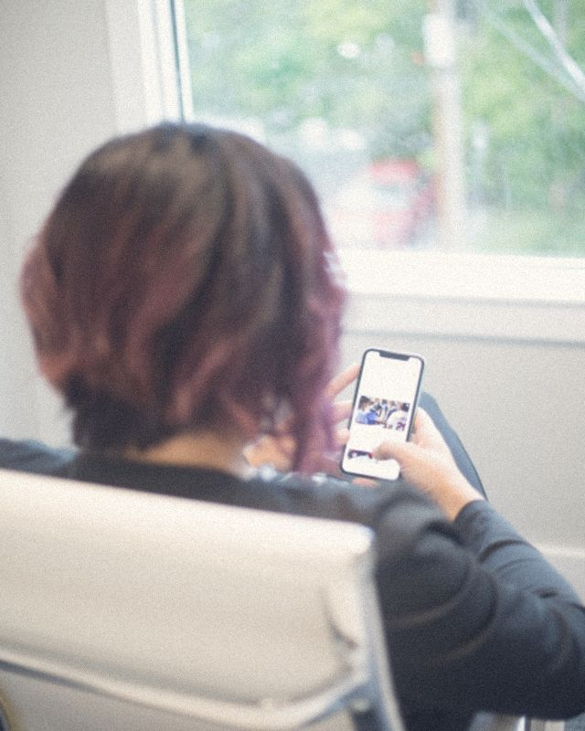
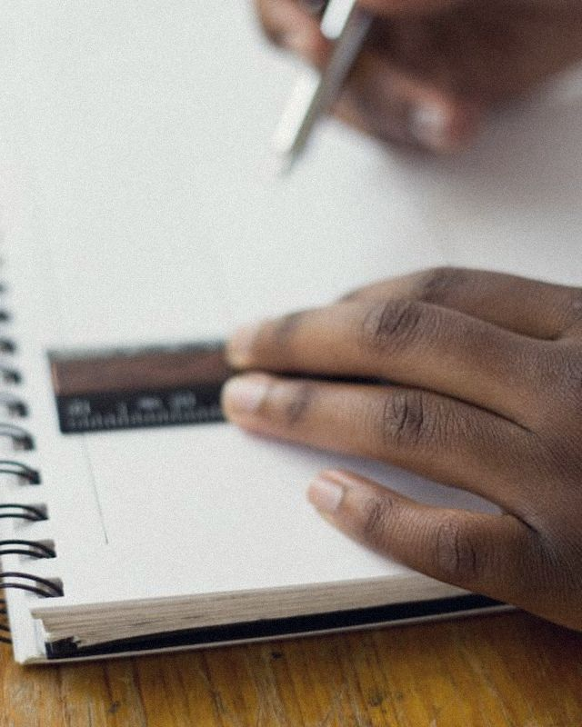
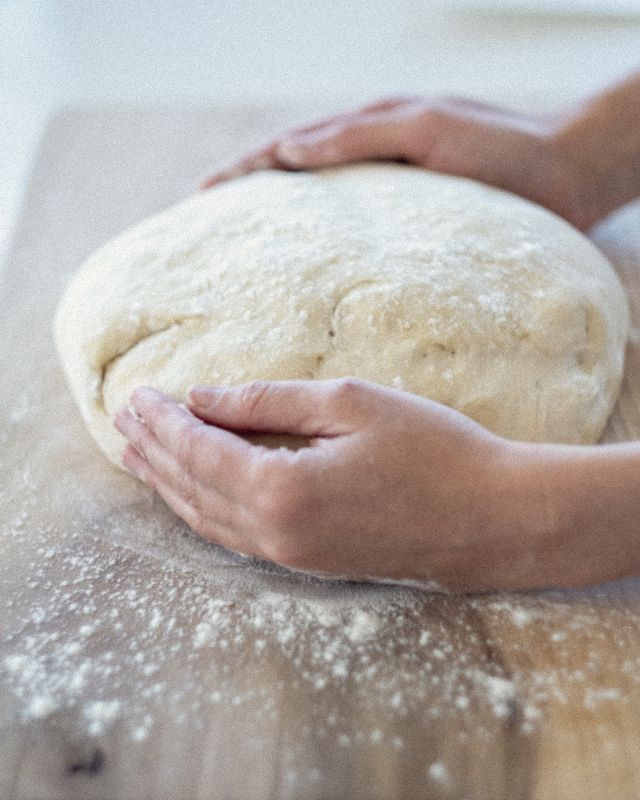
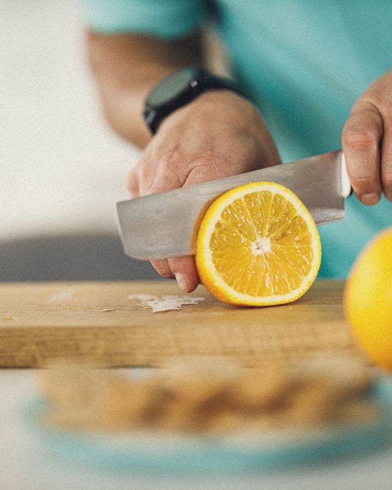

<title>Relevo, desde cero</title>
<meta name="description" content="Estudio de marca de Relevo desde la investigación: plataforma, territorios, logotipo, tipografía, color, imagen, objeto, app y proyecto.">
<link rel="preconnect" href="https://fonts.googleapis.com">
<link rel="preconnect" href="https://fonts.gstatic.com" crossorigin>
<link href="https://fonts.googleapis.com/css2?family=Radio+Canada:ital,wdth,wght@0,75..100,300..700;1,75..100,300..700&display=swap" rel="stylesheet">
<style>
:root{
  --tinta:#16181D;--papel:#F4F4F1;--blanco:#FFFFFF;--niebla:#E4E6E8;--grafito:#5A5F69;--azul:#2A4BD7;--azul-claro:#8CA6FF;--noche:#101217;--luz:#FFC76B;--error:#B3261E;
  --bg:var(--papel);--fg:var(--tinta);--muted:var(--grafito);--surface:var(--blanco);--line:rgba(22,24,29,.14);--mark:var(--azul);--field:var(--azul);--on-field:#FFFFFF;
  --sans:'Radio Canada','Segoe UI',system-ui,sans-serif;
  --mono:'Radio Canada','Segoe UI',system-ui,sans-serif;
}
@media (prefers-color-scheme:dark){:root:not([data-theme="light"]){--bg:#101217;--fg:#ECEDEF;--muted:#9DA2AC;--surface:#1A1D24;--line:rgba(236,237,239,.14);--mark:#8CA6FF;color-scheme:dark}}
:root[data-theme="dark"]{--bg:#101217;--fg:#ECEDEF;--muted:#9DA2AC;--surface:#1A1D24;--line:rgba(236,237,239,.14);--mark:#8CA6FF;color-scheme:dark}
*{box-sizing:border-box}
body{margin:0;background:var(--bg);color:var(--fg);font-family:var(--sans);font-size:17px;line-height:1.55;-webkit-font-smoothing:antialiased}
.wrap{max-width:1240px;margin:0 auto;padding-inline:32px}
.g{display:grid;grid-template-columns:repeat(12,minmax(0,1fr));column-gap:24px}
section{padding-block:88px 0}
h1,h2,h3{text-wrap:balance;margin:0}
h2{font-size:clamp(32px,4.8vw,60px);font-weight:700;font-stretch:88%;letter-spacing:-.025em;line-height:1}
h3{font-size:19px;font-weight:700;letter-spacing:-.01em}
p{margin:0 0 1em;max-width:64ch}
.c{color:var(--mark)}
.mono,.mach{font-family:var(--sans);font-size:12px;font-weight:500;letter-spacing:.07em;text-transform:uppercase;font-variant-numeric:tabular-nums;color:var(--muted)}
.lab{font-family:var(--sans);font-size:12px;font-weight:500;letter-spacing:.07em;text-transform:uppercase;color:var(--muted)}
.muted{color:var(--muted)}
.small{font-size:14px;line-height:1.5}
.lede{font-size:clamp(20px,2.1vw,26px);line-height:1.34;font-weight:400;letter-spacing:-.01em;max-width:40ch}
.head{margin-bottom:40px;align-items:end}
.head .n{grid-column:1/3;font-family:var(--sans);font-variant-numeric:tabular-nums;letter-spacing:.05em;font-size:13px;color:var(--muted);padding-bottom:6px}
.head h2{grid-column:3/13}
.body{grid-column:3/13}
.full{grid-column:1/13}
svg{display:block}
img{display:block;max-width:100%;height:auto}
figure{margin:0}
figcaption{font-size:13px;color:var(--muted);margin-top:8px;line-height:1.45}
table{border-collapse:collapse;width:100%;font-size:15px}
th{font-family:var(--sans);font-variant-numeric:tabular-nums;letter-spacing:.05em;font-weight:400;font-size:12px;text-transform:uppercase;letter-spacing:.04em;color:var(--muted);text-align:left;padding:0 14px 10px 0;border-bottom:1.5px solid var(--fg)}
td{padding:12px 14px 12px 0;border-bottom:1px solid var(--line);vertical-align:top}
.tw{overflow-x:auto}

.runon{font-size:clamp(22px,3.1vw,40px);line-height:1.22;color:var(--muted);font-weight:400;letter-spacing:-.01em;max-width:none;margin:56px 0 0}
.cm-inline{display:inline-block;height:1.05em;width:auto;vertical-align:-.28em;margin-left:.04em}
.turn{font-size:clamp(28px,4vw,52px);font-weight:700;font-stretch:88%;letter-spacing:-.025em;line-height:1.05;margin:18px 0 0;max-width:none}
.hero .mark{width:100%;max-width:1180px;margin:72px 0 40px;color:var(--fg)}
.acts{display:grid;grid-template-columns:repeat(3,minmax(0,1fr));gap:24px}
.acts div{border-top:1.5px solid var(--fg);padding-top:12px}
.acts b{display:block;font-size:22px;font-stretch:88%;margin:8px 0 6px;letter-spacing:-.015em}
.acts p{font-size:15px;color:var(--muted);margin:0}
.board{display:grid;grid-template-columns:repeat(6,minmax(0,1fr));gap:10px}
.board img,.board .frame-runon,.board .frame-light{aspect-ratio:3/4;width:100%;object-fit:cover;border-radius:2px;display:block}
.frame-runon{background:var(--surface);padding:12%;display:flex;align-items:center;overflow:hidden}
.frame-runon p{font-size:clamp(13px,1.2vw,16px);line-height:1.25;color:var(--muted);margin:0}
.frame-light svg{width:100%;height:100%;display:block}
.decide td:first-child{width:24%}.decide td:last-child{width:24%;color:var(--muted);font-size:14px}
.sw-dot{display:inline-block;width:12px;height:12px;border-radius:50%;vertical-align:-1px;margin-left:4px}
.reading{margin-top:32px;background:var(--surface);padding:24px;border-radius:2px}
.reading p:last-child{max-width:62ch;margin:0}
.firma{display:grid;grid-template-columns:5fr 7fr;gap:24px;margin-top:24px}
.f-poster{aspect-ratio:2/3;background:#F4F4F1;color:#5A5F69;padding:9%;display:flex;flex-direction:column;justify-content:space-between;border-radius:2px;box-shadow:0 0 0 1px var(--line)}
.f-poster p{font-size:clamp(20px,2.3vw,30px);line-height:1.15;margin:0;letter-spacing:-.01em}
.f-end{color:#16181D;font-weight:700;font-stretch:88%;font-size:clamp(22px,2.6vw,34px);letter-spacing:-.02em}
.f-strip{aspect-ratio:16/9;background:#101217;color:#9DA2AC;padding:6%;display:flex;align-items:center;border-radius:2px;overflow:hidden}
.f-strip p{font-size:clamp(16px,2vw,26px);line-height:1.2;margin:0}
@media (prefers-reduced-motion:no-preference){.hero .cmfall{animation:fall 6s ease-in-out infinite}@keyframes fall{0%,15%{opacity:0;transform:translateY(-60px)}25%,100%{opacity:1;transform:none}}}
@media (max-width:980px){.acts,.firma{grid-template-columns:1fr}.board{grid-template-columns:repeat(3,minmax(0,1fr))}}
@media (max-width:600px){.board{grid-template-columns:1fr 1fr}}
.stage-logo,.poster,.cover,.slide,.stage,.frame-runon{overflow:hidden}
main,header{overflow-x:clip}
/* hero */
.hero{padding-block:36px 64px}
.hero .top{display:flex;justify-content:space-between;gap:16px;flex-wrap:wrap}

.hero .claim{font-size:clamp(28px,4.4vw,56px);font-weight:700;letter-spacing:-.035em;line-height:1.02;max-width:16ch;margin:0}
.hero .sub{display:grid;grid-template-columns:repeat(12,minmax(0,1fr));column-gap:24px;align-items:end}
.hero .sub .claim{grid-column:1/8}
.hero .sub .note{grid-column:9/13;font-size:15px;color:var(--muted);margin:0}
/* steps */
.steps{list-style:none;margin:0;padding:0;display:grid;grid-template-columns:repeat(4,minmax(0,1fr));gap:0 24px}
.steps li{border-top:1.5px solid var(--fg);padding:14px 0 24px}
.steps b{display:block;font-size:17px;margin:6px 0 4px}
.steps span{font-size:14px;color:var(--muted)}
/* truths */
.truth{display:grid;grid-template-columns:4fr 3fr 3fr;gap:24px;padding:18px 0;border-top:1px solid var(--line)}
.truth:first-child{border-top:1.5px solid var(--fg)}
.truth .src{font-size:15px}
.truth .src cite{display:block;font-style:normal;font-family:var(--sans);font-variant-numeric:tabular-nums;letter-spacing:.05em;font-size:12px;color:var(--muted);margin-top:6px}
.truth .t{font-weight:700}
.truth .d{font-size:15px;color:var(--muted)}
.theads{display:grid;grid-template-columns:4fr 3fr 3fr;gap:24px;margin-bottom:10px}
/* added theory */
.adds{display:grid;grid-template-columns:repeat(3,minmax(0,1fr));gap:0 24px}
.adds div{border-top:1px solid var(--line);padding:14px 0 20px;font-size:15px}
.adds b{display:block;margin-bottom:4px}
/* prism */
.prism{display:grid;grid-template-columns:5fr 7fr;gap:24px;align-items:center}
.facets{display:grid;grid-template-columns:1fr 1fr;gap:0 24px}
.facets div{border-top:1px solid var(--line);padding:12px 0 16px;font-size:15px}
.facets b{display:block;font-family:var(--sans);font-variant-numeric:tabular-nums;letter-spacing:.05em;font-weight:400;font-size:12px;text-transform:uppercase;letter-spacing:.04em;color:var(--muted);margin-bottom:4px}
.platform{margin-top:48px;display:grid;grid-template-columns:repeat(3,minmax(0,1fr));gap:24px}
.platform div{background:var(--surface);padding:22px;border-radius:2px}
.platform .big{font-size:clamp(22px,2.3vw,30px);font-weight:700;letter-spacing:-.025em;line-height:1.1;margin-top:10px}
.voice{margin-top:40px}
.voice td:first-child{width:24%}
.yes{color:var(--fg)}.no{color:var(--muted);text-decoration:line-through;text-decoration-thickness:1px}
/* territories */
.ters{display:grid;grid-template-columns:repeat(3,minmax(0,1fr));gap:24px}
.ter .stage{aspect-ratio:4/5;border-radius:2px;overflow:hidden;position:relative}
.ter h3{margin:14px 0 4px}
.ter p{font-size:14px;color:var(--muted);margin:0 0 6px}
.ter .v{font-family:var(--sans);font-variant-numeric:tabular-nums;letter-spacing:.05em;font-size:12px;text-transform:uppercase;letter-spacing:.04em}
.ter.pick .stage{outline:3px solid var(--mark);outline-offset:4px}
/* logo */
.stage-logo{background:var(--surface);padding:clamp(28px,6vw,72px);border-radius:2px}
.versions{display:grid;grid-template-columns:repeat(3,minmax(0,1fr));gap:24px;margin-top:24px}
.versions .box{aspect-ratio:3/2;display:grid;place-items:center;border-radius:2px;padding:12%}
.minis{display:flex;gap:40px;align-items:flex-end;flex-wrap:wrap;margin-top:32px}
.donts{display:grid;grid-template-columns:repeat(4,minmax(0,1fr));gap:24px;margin-top:40px}
.donts .box{aspect-ratio:3/2;display:grid;place-items:center;background:var(--surface);border-radius:2px;padding:10%;position:relative;overflow:hidden}
.donts .box::after{content:"";position:absolute;left:8%;right:8%;top:50%;height:2px;background:var(--error);transform:rotate(-14deg);opacity:.8}
/* type */
.types{display:grid;grid-template-columns:repeat(3,minmax(0,1fr));gap:24px}
.type{border-top:1.5px solid var(--fg);padding-top:14px}
.type .aa{font-size:clamp(84px,10vw,140px);line-height:1;letter-spacing:-.04em;margin:14px 0 18px;font-weight:700}
.pairs{display:flex;gap:28px;flex-wrap:wrap;font-size:clamp(34px,4vw,54px);font-weight:600;margin:28px 0 8px}
.pairs span{display:inline-flex;flex-direction:column;align-items:center}
.pairs small{font-family:var(--sans);font-variant-numeric:tabular-nums;letter-spacing:.05em;font-size:11px;color:var(--muted);font-weight:400}
.scale td:first-child{font-family:var(--sans);font-variant-numeric:tabular-nums;letter-spacing:.05em;font-size:12px;color:var(--muted);white-space:nowrap;width:200px}
/* color */
.sw{display:grid;grid-template-columns:repeat(4,minmax(0,1fr));gap:0;border-radius:2px;overflow:hidden}
.sw div{min-height:200px;padding:14px;display:flex;flex-direction:column;justify-content:flex-end;font-size:13px;line-height:1.4}
.sw b{font-size:16px;display:block}
.sw code{font-family:var(--sans);font-variant-numeric:tabular-nums;letter-spacing:.05em}
.roles{display:grid;grid-template-columns:repeat(3,minmax(0,1fr));gap:24px;margin-top:32px}
.roles div{border-top:1px solid var(--line);padding-top:12px;font-size:15px}
/* image */
.photos{display:grid;grid-template-columns:repeat(4,minmax(0,1fr));gap:12px}
.photos figure img{aspect-ratio:4/5;object-fit:cover;width:100%;border-radius:2px}
.rules{display:grid;grid-template-columns:repeat(3,minmax(0,1fr));gap:0 24px;margin-top:40px}
.rules div{border-top:1px solid var(--line);padding:14px 0 20px;font-size:15px}
.rules b{display:block;margin-bottom:4px}
.ba{display:grid;grid-template-columns:1fr 1fr 2fr;gap:12px;margin-top:40px;align-items:start}
.ba img{aspect-ratio:4/5;object-fit:cover;width:100%;border-radius:2px}
.avoid{position:relative}
.avoid::after{content:"No";position:absolute;top:10px;left:10px;background:var(--error);color:#fff;font-family:var(--sans);font-variant-numeric:tabular-nums;letter-spacing:.05em;font-size:12px;padding:3px 8px;border-radius:2px}
/* composition */
.comps{display:grid;grid-template-columns:repeat(3,minmax(0,1fr));gap:24px}
/* object */
.obj{display:grid;grid-template-columns:7fr 5fr;gap:24px;align-items:start}
/* app */
.apps{display:grid;grid-template-columns:repeat(3,minmax(0,1fr));gap:24px;align-items:start}
.phone{background:#0B0C10;border-radius:38px;padding:9px;max-width:290px;margin-inline:auto;width:100%}
.scr{border-radius:30px;overflow:hidden;aspect-ratio:9/19.5;display:flex;flex-direction:column;font-size:13px;line-height:1.4;font-family:var(--sans)}
.scr.l{background:#F4F4F1;color:#16181D}.scr.d{background:#101217;color:#ECEDEF}
.sb{display:flex;justify-content:space-between;padding:12px 20px 0;font-family:var(--sans);font-variant-numeric:tabular-nums;letter-spacing:.05em;font-size:10px}
.sc{padding:20px;display:flex;flex-direction:column;flex:1;gap:0}
.btn{display:block;text-align:center;border-radius:12px;padding:13px 8px;font-weight:700;font-size:13px}
.btn.f{background:#16181D;color:#F4F4F1}.btn.o{border:1.5px solid currentColor}
.icons{display:flex;gap:28px;align-items:flex-end;flex-wrap:wrap;margin-bottom:40px}
.icons figure{display:flex;flex-direction:column;align-items:center;gap:6px}
.notif{background:#fff;color:#16181D;border-radius:18px;padding:12px 16px;display:flex;gap:12px;align-items:center;width:330px;max-width:100%;box-shadow:0 1px 4px rgba(0,0,0,.14)}
/* comms */
.posters{display:grid;grid-template-columns:repeat(4,minmax(0,1fr));gap:16px}
.poster{aspect-ratio:2/3;border-radius:2px;overflow:hidden;display:flex;flex-direction:column;background:#fff;color:#16181D;box-shadow:0 0 0 1px var(--line)}
.poster img{height:60%;width:100%;object-fit:cover}
.poster .tx{padding:14px;display:flex;flex-direction:column;justify-content:space-between;flex:1}
.poster .line{font-size:clamp(17px,1.8vw,24px);font-weight:700;letter-spacing:-.025em;line-height:1.08}
.poster .ft{display:flex;justify-content:space-between;align-items:flex-end;font-family:var(--sans);font-variant-numeric:tabular-nums;letter-spacing:.05em;font-size:9px;color:#5A5F69}
.poster.blue{background:#2A4BD7;color:#fff}
/* project */
.proj{display:grid;grid-template-columns:4fr 8fr;gap:24px;align-items:start}
.cover{aspect-ratio:1/1.414;background:#2A4BD7;color:#fff;border-radius:2px;padding:9%;display:flex;flex-direction:column;justify-content:space-between;position:relative;overflow:hidden}
.spread{aspect-ratio:2.828/1;display:grid;grid-template-columns:1fr 1fr;background:#fff;color:#16181D;border-radius:2px;box-shadow:0 0 0 1px var(--line)}
.page{padding:7% 8%;font-size:7.5px;line-height:1.5}
.page+.page{border-left:1px solid #E4E6E8}
.slide{aspect-ratio:16/9;background:#101217;color:#ECEDEF;border-radius:2px;padding:4.5%;display:flex;flex-direction:column;justify-content:space-between;margin-top:16px}
/* tests */
.tests{display:grid;grid-template-columns:1fr 1fr;gap:0 24px}
.tests div{border-top:1px solid var(--line);padding:14px 0 20px;font-size:15px}
.tests b{display:block;margin-bottom:4px}
.refs p{font-size:14px;padding-left:2em;text-indent:-2em;max-width:none;margin-bottom:.6em}
footer{margin-top:88px;padding-block:24px 48px;border-top:1.5px solid var(--fg);font-size:13px;color:var(--muted)}
a{color:inherit}
:focus-visible{outline:2px solid var(--mark);outline-offset:3px}
@media (prefers-reduced-motion:no-preference){
  .type-in .cm{animation:comma 5s ease-in-out infinite}
  @keyframes comma{0%,12%{opacity:0;transform:translateY(-40px)}22%,100%{opacity:1;transform:none}}
}
@media (max-width:980px){
  .head .n,.head h2,.body{grid-column:1/13}
  .steps,.posters{grid-template-columns:1fr 1fr}
  .truth,.theads{grid-template-columns:1fr}.theads{display:none}
  .adds,.ters,.types,.rules,.roles,.apps,.comps,.versions{grid-template-columns:1fr 1fr}
  .prism,.obj,.proj{grid-template-columns:1fr}
  .donts{grid-template-columns:1fr 1fr}
  .sw{grid-template-columns:1fr 1fr}
  .photos{grid-template-columns:1fr 1fr}
  .ba{grid-template-columns:1fr 1fr}.ba>div{grid-column:1/3}
  .hero .sub .claim,.hero .sub .note{grid-column:1/13}.hero .sub .note{margin-top:20px}
}
@media (max-width:600px){
  .wrap{padding-inline:16px}
  section{padding-block:64px 0}
  .steps,.posters,.adds,.ters,.types,.rules,.roles,.apps,.comps,.versions,.facets,.platform,.tests,.donts{grid-template-columns:1fr}
}
</style>

<svg width="0" height="0" style="position:absolute" aria-hidden="true" focusable="false"><defs>
  <symbol id="wm" viewBox="0 0 3120 1010"><g transform="translate(-20 735)"><path d="M59 0V-496H161L188 -405Q204 -442 227.5 -465.0Q251 -488 282.5 -499.0Q314 -510 353 -508V-376Q297 -381 260.5 -367.5Q224 -354 207.0 -322.0Q190 -290 190 -238V0Z M640 12Q561 12 502.0 -20.5Q443 -53 410.0 -112.0Q377 -171 377 -250Q377 -329 412.5 -386.5Q448 -444 506.5 -476.0Q565 -508 636 -508Q696 -508 744.0 -485.5Q792 -463 824.5 -423.0Q857 -383 872.0 -329.0Q887 -275 883 -213H507Q513 -179 526.0 -156.0Q539 -133 557.0 -119.0Q575 -105 596.0 -98.5Q617 -92 638 -92Q675 -92 701.5 -103.5Q728 -115 743 -133L851 -95Q816 -43 760.0 -15.5Q704 12 640 12ZM507 -298H758Q756 -330 740.5 -355.0Q725 -380 699.0 -394.0Q673 -408 638 -408Q609 -408 581.5 -397.5Q554 -387 534.5 -363.0Q515 -339 507 -298Z M1102 0Q1045 0 1012.0 -10.5Q979 -21 965.5 -50.0Q952 -79 952 -133V-708H1082V-164Q1082 -130 1095.0 -119.0Q1108 -108 1145 -108H1185V0Z M1476 12Q1397 12 1338.0 -20.5Q1279 -53 1246.0 -112.0Q1213 -171 1213 -250Q1213 -329 1248.5 -386.5Q1284 -444 1342.5 -476.0Q1401 -508 1472 -508Q1532 -508 1580.0 -485.5Q1628 -463 1660.5 -423.0Q1693 -383 1708.0 -329.0Q1723 -275 1719 -213H1343Q1349 -179 1362.0 -156.0Q1375 -133 1393.0 -119.0Q1411 -105 1432.0 -98.5Q1453 -92 1474 -92Q1511 -92 1537.5 -103.5Q1564 -115 1579 -133L1687 -95Q1652 -43 1596.0 -15.5Q1540 12 1476 12ZM1343 -298H1594Q1592 -330 1576.5 -355.0Q1561 -380 1535.0 -394.0Q1509 -408 1474 -408Q1445 -408 1417.5 -397.5Q1390 -387 1370.5 -363.0Q1351 -339 1343 -298Z M1907 0 1730 -496H1866L1980 -143L2093 -496H2229L2052 0Z M2499 12Q2450 12 2404.5 -3.5Q2359 -19 2322.5 -50.5Q2286 -82 2264.5 -131.5Q2243 -181 2243 -248Q2243 -316 2264.5 -365.0Q2286 -414 2322.5 -445.5Q2359 -477 2404.5 -492.5Q2450 -508 2499 -508Q2548 -508 2593.5 -492.5Q2639 -477 2675.0 -445.5Q2711 -414 2732.5 -365.0Q2754 -316 2754 -248Q2754 -181 2732.5 -131.5Q2711 -82 2675.0 -50.5Q2639 -19 2593.5 -3.5Q2548 12 2499 12ZM2499 -92Q2531 -92 2558.5 -107.5Q2586 -123 2602.5 -157.5Q2619 -192 2619 -248Q2619 -304 2602.5 -338.5Q2586 -373 2558.5 -388.5Q2531 -404 2499 -404Q2467 -404 2439.5 -388.5Q2412 -373 2395.0 -338.5Q2378 -304 2378 -248Q2378 -192 2395.0 -157.5Q2412 -123 2439.5 -107.5Q2467 -92 2499 -92Z"/></g></symbol>
  <symbol id="wmc" viewBox="0 0 3120 1010"><g transform="translate(-20 735)"><path d="M3074.0,-124.0 C3074.0,37.2 2999.6,156.4 2888.0,268.0 C2931.4,131.6 2969.6,35.9 2907.6,-7.5 A124,124 0 1 1 3074.0,-124.0 Z"/></g></symbol>
  <symbol id="mr" viewBox="0 0 720 800"><g transform="translate(0 520)"><path d="M59 0V-496H161L188 -405Q204 -442 227.5 -465.0Q251 -488 282.5 -499.0Q314 -510 353 -508V-376Q297 -381 260.5 -367.5Q224 -354 207.0 -322.0Q190 -290 190 -238V0Z"/></g></symbol>
  <symbol id="mc" viewBox="0 0 720 800"><g transform="translate(0 520)"><path d="M661.0,-124.0 C661.0,37.2 586.6,156.4 475.0,268.0 C518.4,131.6 556.6,35.9 494.6,-7.5 A124,124 0 1 1 661.0,-124.0 Z"/></g></symbol>
  <symbol id="cm" viewBox="2800 -260 300 540"><path d="M3074.0,-124.0 C3074.0,37.2 2999.6,156.4 2888.0,268.0 C2931.4,131.6 2969.6,35.9 2907.6,-7.5 A124,124 0 1 1 3074.0,-124.0 Z"/></symbol>
  <radialGradient id="glow"><stop offset="0" stop-color="#FFE3A8"/><stop offset=".5" stop-color="#FFC76B" stop-opacity=".55"/><stop offset="1" stop-color="#FFC76B" stop-opacity="0"/></radialGradient>
</defs></svg>

<header class="wrap hero">
  <div class="top"><span class="mach">Relevo · estudio de marca desde cero</span><span class="mach">25 de septiembre de 2026 · propuesta para decisión del autor</span></div>
  <p class="runon" aria-label="Relato sin puntuación de una sesión de ocio digital">abriste el teléfono para descansar un rato y viste un video y después otro y alguien te mandó algo que te hizo reír y lo reenviaste y apareció otro video parecido y después uno que no buscabas y el libro seguía en la mesa donde lo dejaste en la tarde y afuera ya estaba oscuro y el pulgar siguió subiendo y otro video y otro más y<svg class="cm-inline" viewBox="0 0 300 540" aria-hidden="true"><use href="#cm" style="fill:var(--mark)"/></svg></p>
  <p class="turn">¿sigues<span class="c">,</span> o lees un rato?</p>
  <svg class="mark" viewBox="0 0 3120 1010" role="img" aria-label="Logotipo: relevo, con la coma en azul"><use href="#wm" fill="currentColor"/><g class="cmfall"><use href="#wmc" style="fill:var(--mark)"/></g></svg>
  <div class="sub">
    <p class="claim">Una coma para volver a&nbsp;elegir<span class="c">.</span></p>
    <p class="note">Estudio hecho desde la investigación de la memoria, con teoría de marca, relato, tipografía e imagen añadida y verificada. Cada decisión de logotipo y color cita su fundamento. Ninguna afirmación es un resultado con usuarios.</p>
  </div>
</header>

<main class="wrap">

<section>
  <div class="g head"><span class="n">00</span><h2>El relato</h2></div>
  <div class="g"><div class="body">
    <p class="lede">Una marca se entiende cuando se puede contar. Relevo cuenta una escena que casi todos conocen y deja el final abierto.</p>
    <div class="adds" style="margin-top:28px">
      <div><b>Las historias crean vínculo.</b> Procesar un anuncio como relato se asoció con una mayor conexión entre la marca y la propia identidad, y con mejores actitudes hacia ella. <span class="muted">Escalas (2004)</span></div>
      <div><b>La persona es la protagonista.</b> Las personas guardan y recuperan información como historias, y usan las marcas como utilería o personajes de sus propios relatos. <span class="muted">Woodside et al. (2008)</span></div>
      <div><b>El relato transporta.</b> Cuanto más se sumerge alguien en una historia, más influye esta en sus creencias. <span class="muted">Green y Brock (2000)</span></div>
    </div>
    <h3 style="margin:48px 0 14px">Cuatro reglas para contar Relevo</h3>
    <div class="rules" style="margin-top:0">
      <div><b>La persona es la protagonista; Relevo, la utilería.</b> Relevo nunca habla de sí mismo como héroe. Es la coma en la historia de otra persona.</div>
      <div><b>Escenas reconocibles.</b> Se cuentan los episodios de la memoria: la cama a la hora de dormir, los videos para «matar el tiempo», el libro que espera en la mesa.</div>
      <div><b>Dos finales válidos.</b> Seguir en el teléfono y cambiar de actividad terminan igual de bien. Así lo exige el usuario límite de la memoria.</div>
      <div><b>Sin moraleja.</b> Nadie aprende una lección ni se vuelve productivo. Juzgar el ocio reduce su disfrute (Tonietto et al., 2021).</div>
    </div>
    <h3 style="margin:48px 0 14px">Tres actos, tres momentos del producto</h3>
    <div class="acts">
      <div><span class="mach">Acto 1 · preparar y esperar</span><b>La frase larga</b><p>Una sesión sin puntos de cierre (Montag et al., 2019). Antes, la persona dejó el libro en la mesa y preparó Relevo.</p></div>
      <div><span class="mach">Acto 2 · aviso</span><b>La coma</b><p>Se cumple la condición y el objeto se enciende junto al libro: una pausa breve, en el lugar donde podría empezar la actividad.</p></div>
      <div><span class="mach">Acto 3 · decidir</span><b>Dos finales</b><p>La persona sigue o cambia. La historia termina en una decisión renovada, no en una conducta correcta.</p></div>
    </div>
    <h3 style="margin:48px 0 14px">Guion gráfico</h3>
    <div class="board">
      <figure><figcaption><b>1.</b> En la tarde deja el libro en la mesa y prepara Relevo: «leer, abrir el libro».</figcaption></figure>
      <figure><figcaption><b>2.</b> Abre el teléfono para descansar. Está bien.</figcaption></figure>
      <figure><div class="frame-runon"><p>y otro video y otro más y alguien comentó y otro video y</p></div><figcaption><b>3.</b> La frase se alarga sin puntos.</figcaption></figure>
      <figure><div class="frame-light" style="background:#101217"><svg viewBox="0 0 300 300" preserveAspectRatio="xMidYMid slice" aria-hidden="true"><rect width="300" height="300" fill="#101217"/><circle cx="170" cy="190" r="120" fill="url(#glow)"/><rect x="40" y="90" width="150" height="100" rx="3" fill="#D9D3C7" transform="rotate(-4 115 140)"/><circle cx="220" cy="200" r="22" fill="#2A2D35"/><circle cx="220" cy="200" r="15" fill="#FFE3A8"/></svg></div><figcaption><b>4.</b> El objeto se enciende junto al libro. La coma.</figcaption></figure>
      <figure><figcaption><b>5A.</b> Sigue viendo. Final válido.</figcaption></figure>
      <figure><figcaption><b>5B.</b> Cierra el teléfono y empieza. También.</figcaption></figure>
    </div>
    <p class="lede" style="margin-top:40px">Relevo es la coma en la frase larga de una tarde con el teléfono<span class="c">:</span> no la termina, te deja elegir cómo sigue.</p>
  </div></div>
</section>


<section>
  <div class="g head"><span class="n">01</span><h2>Cómo se hizo</h2></div>
  <div class="g"><div class="body">
    <p>Un proceso en ocho pasos. Cada decisión visual se puede rastrear hasta un hallazgo de la memoria o una fuente citada.</p>
    <ol class="steps">
      <li><span class="lab">1</span><b>Leer la investigación</b><span>Problema, marco teórico, entrevistas y criterios de la memoria; biblioteca de diseño.</span></li>
      <li><span class="lab">2</span><b>Traducirla en verdades</b><span>Qué debe ser cierto de la marca para no contradecir la investigación.</span></li>
      <li><span class="lab">3</span><b>Mapear la categoría</b><span>Qué hacen y cómo se ven las soluciones existentes.</span></li>
      <li><span class="lab">4</span><b>Escribir la plataforma</b><span>Prisma de identidad, idea, nombre, frase y voz.</span></li>
      <li><span class="lab">5</span><b>Abrir territorios</b><span>Tres conceptos distintos, evaluados con los mismos criterios.</span></li>
      <li><span class="lab">6</span><b>Construir la identidad</b><span>Logotipo, tipografía, color, imagen, composición y movimiento.</span></li>
      <li><span class="lab">7</span><b>Aplicarla</b><span>Objeto, app, comunicación, memoria y examen.</span></li>
      <li><span class="lab">8</span><b>Definir pruebas</b><span>Qué debe comprobarse con personas antes de cerrarla.</span></li>
    </ol>
  </div></div>
</section>

<section>
  <div class="g head"><span class="n">02</span><h2>Lo que dice tu investigación</h2></div>
  <div class="g"><div class="body">
    <p class="lede">La marca no inventa un carácter: lo toma de lo que ya demostró la memoria y de la biblioteca de diseño del proyecto.</p>
    <div class="theads lab" style="margin-top:32px"><span>Base teórica</span><span>Verdad de marca</span><span>Consecuencia de diseño</span></div>
    <div>
      <div class="truth"><div class="src">Las interfaces sin final —desplazamiento infinito, reproducción automática— reducen los puntos de cierre en los que se decide.<cite>Montag et al. (2019), memoria cap. 3 y 6</cite></div><div class="t">Relevo devuelve una pausa donde no la había.</div><div class="d">La idea de marca es una coma: una pausa breve que no termina la frase.</div></div>
      <div class="truth"><div class="src">Una decisión renovada ocurre al volver a considerar si se continúa, se cambia o se detiene.<cite>Memoria, cap. 6</cite></div><div class="t">El valor es volver a elegir, no cambiar de actividad.</div><div class="d">Frase de marca: «Una coma para volver a elegir».</div></div>
      <div class="truth"><div class="src">Juzgar el ocio como improductivo reduce su disfrute. La culpa no es un buen indicador.<cite>Tonietto et al. (2021); De Segovia Vicente et al. (2024)</cite></div><div class="t">Relevo no juzga el tiempo en el teléfono.</div><div class="d">Sin rojos de alarma, sin métricas, sin «desconexión». Las fotos no castigan el teléfono.</div></div>
      <div class="truth"><div class="src">La videollamada de P6 y el pódcast de P7 conservaron sentido: el usuario límite no necesita intervención.<cite>Memoria, cap. 7</cite></div><div class="t">El ocio digital también es legítimo.</div><div class="d">El teléfono aparece en la imagen con naturalidad, en manos de alguien que lo disfruta.</div></div>
      <div class="truth"><div class="src">La memoria prospectiva sirve si la intención vuelve cuando todavía se puede actuar.<cite>McDaniel y Einstein (2000)</cite></div><div class="t">Relevo trabaja con el momento justo.</div><div class="d">La señal es breve y nítida; la marca comunica «a tiempo», no «más tiempo».</div></div>
      <div class="truth"><div class="src">Organizar el espacio hace perceptibles las acciones: dejar el libro en la mesa o las zapatillas junto a la puerta.<cite>Kirsh (1995); Risko y Gilbert (2016)</cite></div><div class="t">La intención vive en un lugar.</div><div class="d">La imagen muestra materiales preparados y el objeto entre ellos.</div></div>
      <div class="truth"><div class="src">Ofrecer opciones reales mejoró una intervención; cambiar solo el lenguaje, no.<cite>Smit et al. (2019)</cite></div><div class="t">La amabilidad no reemplaza la salida.</div><div class="d">Voz directa, sin ánimos ni diminutivos; dos salidas del mismo peso.</div></div>
      <div class="truth"><div class="src">Varias personas pidieron señales calmadas o discretas, y una rechazó las comparaciones entre días.<cite>P3–P5, P7 y P8, Q13</cite></div><div class="t">Discreción.</div><div class="d">Ningún gráfico de uso. Un solo color de acento y poca superficie de color.</div></div>
      <div class="truth"><div class="src">Una clave visible dice qué se puede hacer; la retroalimentación informa qué ocurrió.<cite>Norman (2002)</cite></div><div class="t">Cada estado debe verse.</div><div class="d">Lo que escribió la persona, lo que hace el sistema y los estados técnicos se distinguen a simple vista.</div></div>
      <div class="truth"><div class="src">El color cambia según su contexto; el signo debe evitar lecturas equivocadas; el producto se diseña de extremo a extremo.<cite>Albers (2013); Munari (1971); Isaacson (2011)</cite></div><div class="t">Un sistema, no piezas.</div><div class="d">El color se prueba sobre foto, pantalla y objeto; un solo signo recorre app, objeto y caja.</div></div>
    </div>
  </div></div>
</section>

<section>
  <div class="g head"><span class="n">03</span><h2>Teoría que se suma</h2></div>
  <div class="g"><div class="body">
    <div class="adds">
      <div><b>Prisma de identidad</b>Seis facetas para describir una marca: físico, personalidad, relación, cultura, reflejo y autoimagen. <span class="muted">Kapferer (2012)</span></div>
      <div><b>Proceso e ideales de identidad</b>Significado, diferenciación, coherencia, flexibilidad y durabilidad como criterios de evaluación. <span class="muted">Wheeler (2017)</span></div>
      <div><b>Nombres sugestivos</b>Un nombre que sugiere su beneficio mejora el recuerdo de mensajes coherentes con él. <span class="muted">Keller et al. (1998)</span></div>
      <div><b>Tipología de marcas</b>Logotipos, símbolos y sus combinaciones; cuándo conviene cada uno. <span class="muted">Mollerup (2013)</span></div>
      <div><b>Gramática visual</b>Lo dado a la izquierda y lo nuevo a la derecha; la prominencia; las imágenes que ofrecen frente a las que exigen. <span class="muted">Kress y van Leeuwen (2021)</span></div>
      <div><b>Legibilidad de letras</b>Las letras que más se confunden mejoran al diferenciarse y ensancharse. <span class="muted">Beier y Larson (2010); Braille Institute (s. f.)</span></div>
      <div><b>Impresión tipográfica</b>Las dimensiones de una tipografía producen impresiones distintas y exigen compromisos. <span class="muted">Henderson et al. (2004)</span></div>
      <div><b>Luces puntuales</b>Los destellos breves e intensos se leen como aviso; los pulsos lentos, como poca energía. <span class="muted">Harrison et al. (2012)</span></div>
      <div><b>Luz de noche</b>La luz rica en azules por la noche retrasa el sueño; la señal del objeto debe ser cálida. <span class="muted">Chang et al. (2015)</span></div>
    </div>
  </div></div>
</section>

<section>
  <div class="g head"><span class="n">04</span><h2>La categoría actúa sobre el teléfono</h2></div>
  <div class="g"><div class="body">
    <p>Las herramientas de autocontrol se concentran en obstaculizar la conducta no deseada; pocas apoyan la actividad alternativa (Lyngs et al., 2019). Sus códigos visuales —relojes de arena, barras de tiempo, candados, mascotas, pasteles— salen de esa lógica. El mapa ordena tipos de solución, no marcas.</p>
    <div class="tw" style="margin-top:24px"><svg viewBox="0 0 900 520" style="min-width:620px;width:100%;color:var(--fg)" role="img" aria-label="Mapa de la categoría: eje horizontal de actuar sobre el teléfono a actuar sobre la intención; eje vertical de evaluar a no evaluar la conducta">
      <rect x="60" y="20" width="800" height="440" style="fill:var(--surface)"/>
      <line x1="460" y1="20" x2="460" y2="460" stroke="currentColor" stroke-opacity=".25"/><line x1="60" y1="240" x2="860" y2="240" stroke="currentColor" stroke-opacity=".25"/>
      <g font-family="Radio Canada, sans-serif" font-size="12" style="fill:var(--muted)">
        <text x="70" y="486">ACTÚA SOBRE EL TELÉFONO</text><text x="850" y="486" text-anchor="end">ACTÚA SOBRE LA INTENCIÓN</text>
        <text x="40" y="36" transform="rotate(-90 40 36)" text-anchor="end">EVALÚA LA CONDUCTA</text><text x="40" y="450" transform="rotate(-90 40 450)" text-anchor="start">NO EVALÚA</text>
      </g>
      <g font-family="Radio Canada, sans-serif" font-size="15" style="fill:var(--fg)">
        <circle cx="160" cy="90" r="7" fill="currentColor"/><text x="176" y="95">Paneles de tiempo</text><text x="176" y="113" font-size="12" style="fill:var(--muted)">relojes de arena, barras</text>
        <circle cx="140" cy="190" r="7" fill="currentColor"/><text x="156" y="195">Bloqueadores y llaves físicas</text><text x="156" y="213" font-size="12" style="fill:var(--muted)">candados, negro</text>
        <circle cx="560" cy="80" r="7" fill="currentColor"/><text x="576" y="85">Juegos y rachas</text><text x="576" y="103" font-size="12" style="fill:var(--muted)">mascotas, premios</text>
        <circle cx="230" cy="330" r="7" fill="currentColor"/><text x="246" y="335">Pausas antes de abrir</text><text x="246" y="353" font-size="12" style="fill:var(--muted)">fricción en la pantalla</text>
        <circle cx="640" cy="330" r="7" fill="currentColor"/><text x="656" y="335">Alarmas y notas</text><text x="656" y="353" font-size="12" style="fill:var(--muted)">recuerdan, sin lugar</text>
        <circle cx="760" cy="410" r="11" style="fill:var(--mark)"/><text x="744" y="415" text-anchor="end" font-weight="700" style="fill:var(--mark)">Relevo</text><text x="744" y="433" text-anchor="end" font-size="12" style="fill:var(--muted)">intención, lugar y momento</text>
      </g>
    </svg></div>
  </div></div>
</section>

<section>
  <div class="g head"><span class="n">05</span><h2>Plataforma de marca</h2></div>
  <div class="g"><div class="body">
    <div class="prism">
      <svg viewBox="0 0 400 380" role="img" aria-label="Prisma de identidad de Kapferer con seis facetas" style="width:100%;max-width:420px;color:var(--fg)">
        <polygon points="200,20 360,110 360,270 200,360 40,270 40,110" fill="none" stroke="currentColor" stroke-width="1.5"/>
        <line x1="40" y1="190" x2="360" y2="190" stroke="currentColor" stroke-opacity=".3"/><line x1="200" y1="20" x2="200" y2="360" stroke="currentColor" stroke-opacity=".3" stroke-dasharray="4 4"/>
        <g font-family="Radio Canada, sans-serif" font-size="11" style="fill:var(--muted)" text-anchor="middle">
          <text x="120" y="100">FÍSICO</text><text x="280" y="100">PERSONALIDAD</text><text x="120" y="180">RELACIÓN</text><text x="280" y="180">CULTURA</text><text x="120" y="262">REFLEJO</text><text x="280" y="262">AUTOIMAGEN</text>
          <text x="200" y="378" font-size="10">emisor arriba · receptor abajo</text>
        </g>
        <g font-family="Radio Canada, sans-serif" font-size="13" style="fill:var(--fg)" text-anchor="middle">
          <text x="120" y="120">un objeto pequeño</text><text x="120" y="136">que se enciende</text><text x="280" y="120">atenta, directa,</text><text x="280" y="136">tranquila</text>
          <text x="120" y="204">recuerda lo que</text><text x="120" y="220">tú le pediste</text><text x="280" y="204">ocio sin culpa,</text><text x="280" y="220">autonomía</text>
          <text x="120" y="282">alguien que se da</text><text x="120" y="298">tiempo para lo suyo</text><text x="280" y="282">«decido yo»</text>
        </g>
      </svg>
      <div class="facets">
        <div><b>Físico</b>Un objeto pequeño que emite una luz cálida una vez, junto a lo que querías hacer, y una app que lo prepara.</div>
        <div><b>Personalidad</b>Atenta, directa y tranquila. Nunca entusiasta ni severa.</div>
        <div><b>Relación</b>Recuerda lo que tú le pediste. No es entrenadora, guardiana ni cómplice.</div>
        <div><b>Cultura</b>El ocio no se justifica por su utilidad; la decisión es de la persona.</div>
        <div><b>Reflejo</b>Una persona que se da tiempo para sus cosas; no alguien «adicto» ni «optimizado».</div>
        <div><b>Autoimagen</b>«Decido yo qué sigue.»</div>
      </div>
    </div>
    <div class="platform">
      <div><span class="lab">Idea</span><div class="big">Una coma, no un punto final<span class="c">.</span></div><p class="small muted" style="margin-top:10px">La coma marca una pausa breve dentro de una frase que puede seguir (Real Academia Española y Asociación de Academias de la Lengua Española [RAE y ASALE], 2010). Relevo no termina la sesión: la puntúa.</p></div>
      <div><span class="lab">Frase</span><div class="big">Una coma para volver a elegir<span class="c">.</span></div><p class="small muted" style="margin-top:10px">Dice qué hace la marca y qué no promete: volver a elegir incluye seguir.</p></div>
      <div><span class="lab">Descriptor</span><div class="big">Un recordatorio físico que preparas desde tu teléfono<span class="c">.</span></div><p class="small muted" style="margin-top:10px">Para quien todavía no conoce el producto.</p></div>
    </div>
    <p style="margin-top:32px"><b>El nombre.</b> «Relevo» sugiere un cambio de turno. Los nombres sugestivos ayudan a recordar los mensajes coherentes con ellos (Keller et al., 1998), así que la marca usa su significado en vez de esquivarlo, con una precisión: todo relevo empieza con una pausa, y en esa pausa la persona puede quedarse donde está.</p>
    <div class="tw voice"><table>
      <thead><tr><th>Principio de voz</th><th>Sí</th><th>No</th></tr></thead>
      <tbody>
        <tr><td>Habla de lo que la persona dijo</td><td class="yes">Querías leer<span class="c">,</span> ¿ahora o después?</td><td class="no">¡Hora de desconectarte!</td></tr>
        <tr><td>Las dos salidas pesan lo mismo</td><td class="yes">Seguir viendo · Ir a leer</td><td class="no">Seguir perdiendo el tiempo</td></tr>
        <tr><td>Los fallos se explican</td><td class="yes">El objeto no responde. Revisa que esté cerca y encendido.</td><td class="no">Ups, algo salió mal</td></tr>
        <tr><td>Sin premios ni cuentas</td><td class="yes">Recordatorio activo hasta las 23:00.</td><td class="no">¡Llevas 5 días seguidos!</td></tr>
      </tbody></table></div>
  </div></div>
</section>

<section>
  <div class="g head"><span class="n">06</span><h2>Tres territorios</h2></div>
  <div class="g"><div class="body">
    <p>Tres conceptos distintos, desarrollados hasta tener logotipo, color e imagen, y evaluados con los mismos criterios.</p>
    <div class="ters">
      <article class="ter pick"><div class="stage" style="background:#F4F4F1">
        
        <div style="padding:8%;color:#16181D"><div style="font-weight:700;font-size:clamp(16px,1.6vw,21px);letter-spacing:-.02em;line-height:1.1">Un video más<span style="color:#2A4BD7">,</span> o a dibujar.</div>
          <svg viewBox="0 0 3120 1010" style="width:34%;margin-top:14px"><use href="#wm" fill="#16181D"/><use href="#wmc" fill="#2A4BD7"/></svg></div></div>
        <h3>A · La coma</h3><p>Relevo pone una pausa breve en una sesión sin cierres. La coma, en azul de lápiz pasta, es la marca de la persona dentro de la continuidad.</p><span class="v c">Elegido</span></article>
      <article class="ter"><div class="stage" style="background:#1B2A6B;color:#fff;display:flex;flex-direction:column;justify-content:space-between;padding:10%">
        <div style="display:flex;gap:10px"><span style="width:26px;height:26px;border-radius:50%;background:#F26A2E"></span><span style="width:26px;height:26px;border-radius:50%;border:2px solid #fff"></span></div>
        <div style="font-weight:800;font-size:clamp(30px,3.4vw,46px);letter-spacing:.02em;line-height:1">RELEVO</div>
        <div style="font-weight:700;font-size:clamp(16px,1.6vw,21px);line-height:1.1">Ahora le toca<br>a la guitarra.</div></div>
        <h3>B · El turno</h3><p>El nombre al pie de la letra: cada actividad tiene su turno. Dos puntos que se alternan.</p><p class="small"><b>Descartado.</b> «Te toca» suena a obligación en el habla chilena y la carrera de relevos lleva al deporte.</p></article>
      <article class="ter"><div class="stage" style="background:#E9E4DA;position:relative">
        
        <svg viewBox="0 0 400 500" style="position:absolute;inset:0;width:100%;height:100%" aria-hidden="true"><g stroke="#fff" stroke-width="4" fill="none"><path d="M120 150 h-40 v40"/><path d="M280 150 h40 v40"/><path d="M120 350 h-40 v-40"/><path d="M280 350 h40 v-40"/></g><text x="200" y="470" text-anchor="middle" fill="#fff" font-family="Radio Canada, sans-serif" font-size="30" font-weight="700">Relevo</text></svg></div>
        <h3>C · El lugar preparado</h3><p>Marcas de encuadre que reservan un lugar para la actividad, como en una mesa dispuesta.</p><p class="small"><b>Descartado.</b> Se parece a la fotografía de estilo de vida y pierde fuerza en la app.</p></article>
    </div>
    <div class="tw" style="margin-top:40px"><table>
      <thead><tr><th>Criterio</th><th>A · Coma</th><th>B · Turno</th><th>C · Lugar</th></tr></thead>
      <tbody>
        <tr><td>Significado: nace de la investigación</td><td>alto: puntos de cierre, decisión renovada</td><td>medio: nombre</td><td>alto: espacio, Kirsh</td></tr>
        <tr><td>Diferenciación en la categoría</td><td>alta: nadie usa la puntuación</td><td>media</td><td>baja: estilo de vida</td></tr>
        <tr><td>No juzga ni obliga</td><td>alto: la frase puede seguir</td><td>bajo: «te toca»</td><td>alto</td></tr>
        <tr><td>Coherencia entre app, objeto y caja</td><td>alta: un signo tipográfico</td><td>media</td><td>media: débil en pantalla</td></tr>
        <tr><td>Flexibilidad: produce mensajes nuevos</td><td>alta: «[esto], o [aquello]»</td><td>media</td><td>baja</td></tr>
      </tbody></table></div>
    <p class="small muted" style="margin-top:10px">Criterios de Wheeler (2017) y de la memoria. Evaluación experta, no medición con personas.</p>
  </div></div>
</section>

<section>
  <div class="g head"><span class="n">07</span><h2>Logotipo<span class="c">,</span></h2></div>
  <div class="g"><div class="body">
    <p class="lede">«relevo» en minúsculas, como una palabra en medio de una frase, seguida de una coma propia en azul.</p>
    <div class="stage-logo" style="margin-top:32px">
      <svg viewBox="-40 -240 3700 1380" role="img" aria-label="Construcción del logotipo" style="width:100%;color:var(--fg);overflow:visible">
        <g stroke="currentColor" stroke-opacity=".3" stroke-width="3"><line x1="-40" y1="735" x2="3640" y2="735"/><line x1="-40" y1="239" x2="3640" y2="239"/><line x1="-40" y1="27" x2="3640" y2="27"/><line x1="-40" y1="487" x2="3640" y2="487" stroke-dasharray="14 12"/></g>
        <use href="#wm" x="0" y="0" width="3120" height="1010" fill="currentColor"/>
        <use href="#wmc" x="0" y="0" width="3120" height="1010" style="fill:var(--mark)"/>
        <circle cx="2930" cy="611" r="124" fill="none" stroke="currentColor" stroke-width="4" stroke-dasharray="16 10"/>
        <g font-family="Radio Canada, sans-serif" font-size="42" style="fill:var(--muted)">
          <text x="-40" y="-160">LETRAS: ATKINSON HYPERLEGIBLE NEXT · PESO 650 · INTERLETRA −1 %</text>
          <text x="3640" y="15" text-anchor="end">ascendente</text><text x="3640" y="227" text-anchor="end">altura de x 496</text><text x="3640" y="475" text-anchor="end">mitad de x</text><text x="3640" y="723" text-anchor="end">línea base</text>
          <text x="3100" y="920">cabeza de la coma: círculo</text><text x="3100" y="970">de ½ altura de x (Ø 248)</text>
          <text x="-40" y="1100">La «l» con cola es propia de la fuente hiperlegible: no se confunde con la «I».</text>
        </g>
      </svg>
    </div>
    <h3 style="margin:40px 0 12px">Cada decisión y su fundamento</h3>
    <div class="tw"><table class="decide">
      <thead><tr><th>Decisión</th><th>Fundamento</th><th>Fuente</th></tr></thead>
      <tbody>
        <tr><td><b>Solo un logotipo, sin símbolo aparte</b></td><td>Los logotipos y los personajes tienen el mayor potencial de ser propios de una marca; el color, el menor, porque la competencia lo comparte. Una marca nueva no necesita un signo más que aprender.</td><td>Ward et al. (2020); Mollerup (2013)</td></tr>
        <tr><td><b>Minúsculas</b></td><td>Los logotipos en minúsculas se perciben más cercanos y los de mayúsculas, más autoritarios. Relevo recuerda; no manda.</td><td>Xu et al. (2017)</td></tr>
        <tr><td><b>Una coma, no un punto</b></td><td>La coma marca una pausa breve dentro de un enunciado que sigue; el punto lo cierra. Relevo devuelve un punto de pausa sin terminar la sesión.</td><td>RAE y ASALE (2010); Montag et al. (2019)</td></tr>
        <tr><td><b>Coma dibujada, no la de la fuente</b></td><td>La cabeza es un círculo exacto: el objeto visto desde arriba. Repetir un rasgo entre producto y marca construye reconocimiento. El círculo aporta suavidad frente a las rectas de las letras.</td><td>Karjalainen y Snelders (2010); Jiang et al. (2016)</td></tr>
        <tr><td><b>Letras de Atkinson Hyperlegible</b></td><td>El nombre aparece en íconos y notificaciones pequeñas; las letras diferenciadas, como la «l» con cola, se reconocen mejor.</td><td>Beier y Larson (2010); Braille Institute (s. f.)</td></tr>
        <tr><td><b>Peso 650</b></td><td>Un peso intermedio da presencia sin volverse pesado. La impresión de una tipografía depende de su peso, entre otras dimensiones, y exige compromisos.</td><td>Henderson et al. (2004)</td></tr>
        <tr><td><b>La asimetría, solo en la coma</b></td><td>La asimetría se asocia con excitación. La coma introduce un único gesto de movimiento, suficiente para llamar la atención. El resto del sistema es sereno.</td><td>Bajaj y Bond (2018)</td></tr>
        <tr><td><b>La coma, en azul</b></td><td>Es la marca de la persona dentro de la continuidad. Véase el color.</td><td>Sección de color</td></tr>
      </tbody></table></div>
    <div class="versions">
      <figure><div class="box" style="background:#F4F4F1"><svg viewBox="0 0 3120 1010" width="100%"><use href="#wm" fill="#16181D"/><use href="#wmc" fill="#2A4BD7"/></svg></div><figcaption>Principal: tinta y coma azul.</figcaption></figure>
      <figure><div class="box" style="background:#2A4BD7"><svg viewBox="0 0 3120 1010" width="100%"><use href="#wm" fill="#FFFFFF"/><use href="#wmc" fill="#FFFFFF"/></svg></div><figcaption>Sobre campo azul: todo en blanco.</figcaption></figure>
      <figure><div class="box" style="background:#101217"><svg viewBox="0 0 3120 1010" width="100%"><use href="#wm" fill="#ECEDEF"/><use href="#wmc" fill="#8CA6FF"/></svg></div><figcaption>Noche: coma en azul claro.</figcaption></figure>
    </div>
    <div class="minis">
      <figure><svg viewBox="0 0 1000 1000" width="96" height="96" role="img" aria-label="Monograma r coma en campo azul"><rect width="1000" height="1000" rx="224" fill="#2A4BD7"/><svg x="170" y="150" width="660" height="733" viewBox="0 0 720 800"><use href="#mr" fill="#fff"/><use href="#mc" fill="#fff"/></svg></svg><figcaption>Monograma «r,»</figcaption></figure>
      <figure><svg viewBox="0 0 3120 1010" width="88" style="color:var(--fg)"><use href="#wm" fill="currentColor"/><use href="#wmc" style="fill:var(--mark)"/></svg><figcaption>Mínimo: 88 px o 22 mm</figcaption></figure>
      <figure><svg viewBox="0 0 720 800" width="16" style="color:var(--fg)"><use href="#mr" fill="currentColor"/><use href="#mc" style="fill:var(--mark)"/></svg><figcaption>Monograma mínimo: 16 px</figcaption></figure>
      <p class="small muted" style="max-width:36ch;margin:0">Resguardo: alrededor del logotipo, al menos el diámetro de la cabeza de la coma. En el logotipo la coma nunca se separa del nombre; sola, funciona como elemento gráfico.</p>
    </div>
    <div class="donts">
      <figure><div class="box"><svg viewBox="0 0 3120 1010" width="100%"><use href="#wm" fill="#16181D"/></svg></div><figcaption>No quitar la coma.</figcaption></figure>
      <figure><div class="box"><svg viewBox="0 0 3120 1010" width="100%"><use href="#wm" fill="#16181D"/><use href="#wmc" fill="#E0452C"/></svg></div><figcaption>No cambiar el azul: el rojo suena a alarma.</figcaption></figure>
      <figure><div class="box"><div style="font-family:var(--sans);font-weight:700;font-size:clamp(20px,2.4vw,30px);color:#16181D;letter-spacing:.06em">RELEVO<span style="color:#2A4BD7">.</span></div></div><figcaption>Sin mayúsculas ni punto final, que cierra la frase.</figcaption></figure>
      <figure><div class="box"><svg viewBox="0 0 3120 1010" width="100%" preserveAspectRatio="none" style="height:32px"><use href="#wm" fill="#16181D"/><use href="#wmc" fill="#2A4BD7"/></svg></div><figcaption>No deformar.</figcaption></figure>
    </div>
  </div></div>
</section>

<section>
  <div class="g head"><span class="n">08</span><h2>Tipografía: un logotipo dibujado y una familia para leer</h2></div>
  <div class="g"><div class="body">
    <p>Se separan dos funciones. El <b>logotipo</b> se dibujó con letras de Atkinson Hyperlegible Next, que se reconocen mejor en tamaños pequeños. El <b>sistema</b> —títulos, texto continuo, interfaz y datos— usa <b>Radio Canada</b>: una humanista creada en 2017 por Charles Daoud para la radiotelevisión pública de Canadá, pensada para el texto continuo y la accesibilidad digital (Google Fonts, s. f.). Tiene licencia OFL, ejes de peso y ancho, y cursivas.</p>
    <div class="pairs" aria-label="Rasgos de legibilidad">
      <span>Il1<small>I con remates · l · 1</small></span><span>0 O<small>cero sin raya</small></span><span>2026<small>cifras limpias</small></span><span>ñ ¿¡<small>español</small></span>
    </div>
    <div class="tw" style="margin-top:12px"><table class="decide">
      <thead><tr><th>Decisión</th><th>Fundamento</th><th>Fuente</th></tr></thead>
      <tbody>
        <tr><td><b>Texto en Radio Canada, no en Atkinson</b></td><td>Atkinson traza el cero con barra: útil en códigos, pero en texto continuo cada fecha y cifra llama la atención (el texto de la memoria, antes de las referencias, tiene 705 cifras y 129 ceros). Radio Canada mantiene la «I» con remates, que la distingue de la «l», con un cero limpio.</td><td>Beier y Larson (2010); Google Fonts (s. f.)</td></tr>
        <tr><td><b>Una sola familia en dos anchos</b></td><td>Los títulos van al 88 % de ancho, más compactos y con más carácter; el texto, al 100 %. Menos familias significa más coherencia entre app, memoria y comunicación.</td><td>Henderson et al. (2004); Wheeler (2017)</td></tr>
        <tr><td><b>Tres voces sin tres familias</b></td><td>El sistema habla en tinta; lo que escribió la persona, en azul; los estados técnicos, en versalitas grises con cifras tabulares. La memoria exige no confundir la intención con un fallo técnico.</td><td>Norman (2002); memoria, cap. 11</td></tr>
      </tbody></table></div>
    <div class="types" style="margin-top:32px">
      <div class="type"><span class="mach">El sistema</span><div class="aa">Aa</div><p class="small"><b>Tinta.</b> Títulos, instrucciones y botones.</p><p style="font-weight:700;font-stretch:88%;font-size:24px;letter-spacing:-.02em;margin:0">¿Qué quieres tener presente hoy?</p></div>
      <div class="type"><span class="mach">La persona</span><div class="aa c">Aa</div><p class="small"><b>Azul.</b> La actividad y cómo empezar; las citas de P1–P8 en la memoria.</p><p class="c" style="font-weight:700;font-size:22px;margin:0">Leer, abrir el libro de la mesa</p></div>
      <div class="type"><span class="mach">La máquina</span><div class="aa" style="font-weight:500;color:var(--muted)">AA</div><p class="small"><b>Versalitas grises, cifras tabulares.</b> Condición, minutos, conexión, batería.</p><p class="mach" style="font-size:14px;margin:0">45 min · 2 apps · objeto conectado</p></div>
    </div>
    <div class="reading">
      <p class="mach" style="margin-bottom:10px">Texto continuo · 17 px · interlínea 1,55 · 62 caracteres por línea</p>
      <p>En 2025, el 96,6 % de los hogares chilenos declaró contar con acceso propio y pagado a internet, y entre los hogares conectados el teléfono fue el dispositivo más extendido, con una presencia de 99,1 %. Estas cifras describen un entorno conectado, pero no dicen nada sobre el valor de cada experiencia digital. Participaron ocho personas de 19 a 27 años, entrevistadas el 11 y el 12 de junio de 2026.</p>
    </div>
  </div></div>
</section>

<section>
  <div class="g head"><span class="n">09</span><h2>Color: tinta, papel y un azul de lápiz pasta</h2></div>
  <div class="g"><div class="body">
    <p class="lede">El azul del lápiz pasta es el color con que uno se anota algo a sí mismo. En Relevo marca lo que escribió la persona y su pausa dentro de la continuidad.</p>
    <div class="sw" style="margin-top:28px">
      <div style="background:#16181D;color:#F4F4F1"><b>Tinta</b><code>#16181D</code>Texto, logotipo y acciones</div>
      <div style="background:#2A4BD7;color:#fff"><b>Azul pasta</b><code>#2A4BD7</code>La coma y la voz de la persona</div>
      <div style="background:#5A5F69;color:#fff"><b>Grafito</b><code>#5A5F69</code>Texto secundario y estados</div>
      <div style="background:#E4E6E8;color:#16181D"><b>Niebla</b><code>#E4E6E8</code>Superficies y líneas</div>
      <div style="background:#F4F4F1;color:#16181D;box-shadow:inset 0 0 0 1px rgba(22,24,29,.1)"><b>Papel</b><code>#F4F4F1</code>Fondo principal, neutro</div>
      <div style="background:#101217;color:#ECEDEF"><b>Noche</b><code>#101217</code>Tema oscuro y aviso</div>
      <div style="background:#8CA6FF;color:#101217"><b>Azul claro</b><code>#8CA6FF</code>La coma sobre noche</div>
      <div style="background:radial-gradient(circle at 50% 28%,#FFE3A8,#FFC76B 22%,#101217 58%);color:#ECEDEF"><b>Luz</b><code>~2700 K</code>Solo la luz física del objeto</div>
    </div>
    <h3 style="margin:40px 0 12px">Cada color y su fundamento</h3>
    <div class="tw"><table class="decide">
      <thead><tr><th>Color</th><th>Fundamento</th><th>Fuente</th></tr></thead>
      <tbody>
        <tr><td><b>Azul pasta</b> <span class="sw-dot" style="background:#2A4BD7"></span></td><td><b>Significado.</b> Es el color de la nota escrita por uno mismo; las intenciones se descargan en notas y objetos. <b>Asociación.</b> El azul se asoció con competencia en la personalidad de marca, y con motivación de acercamiento frente al rojo, que se asocia con evitación. Un recordatorio debe ser confiable, no alarmante. <b>Contexto.</b> El significado del color depende del contexto, así que se usa siempre para lo mismo: la voz de la persona.</td><td>Risko y Gilbert (2016); Labrecque y Milne (2012); Mehta y Zhu (2009); Elliot et al. (2007); Elliot y Maier (2014)</td></tr>
        <tr><td><b>El azul nunca va solo</b></td><td>El color es el elemento que más cuesta hacer propio porque la categoría lo comparte. El azul pertenece a Relevo solo junto con la coma.</td><td>Ward et al. (2020)</td></tr>
        <tr><td><b>Tinta y papel neutros</b> <span class="sw-dot" style="background:#16181D"></span><span class="sw-dot" style="background:#F4F4F1;box-shadow:inset 0 0 0 1px #ccc"></span></td><td>Un color cambia según lo que lo rodea: un fondo crema entibiaría el azul y uno blanco puro lo endurecería. El papel neutro lo deja leerse tal cual. La tinta tiene un leve sesgo azul para emparentarse con él. Contraste de 16,12:1.</td><td>Albers (2013); World Wide Web Consortium (2023)</td></tr>
        <tr><td><b>Grafito para la máquina</b> <span class="sw-dot" style="background:#5A5F69"></span></td><td>Lo menos importante tiene menos prominencia visual. Los estados técnicos no compiten con la intención.</td><td>Kress y van Leeuwen (2021)</td></tr>
        <tr><td><b>Luz cálida solo en el objeto</b> <span class="sw-dot" style="background:#FFC76B"></span></td><td>La luz rica en azules por la noche retrasó el sueño y suprimió la melatonina. La señal puede ocurrir de noche, y P2 contó una sesión a la hora de dormir.</td><td>Chang et al. (2015)</td></tr>
        <tr><td><b>El aviso, en pantalla oscura</b> <span class="sw-dot" style="background:#101217"></span></td><td>Una pantalla oscura emite menos luz en el momento de la señal. El cambio de fondo también distingue el aviso sin depender de un color.</td><td>Chang et al. (2015); Norman (2002)</td></tr>
        <tr><td><b>Sin rojo, salvo errores</b> <span class="sw-dot" style="background:#B3261E"></span></td><td>El rojo se asocia con evitación en tareas de logro. Queda para fallos técnicos, siempre con texto.</td><td>Elliot et al. (2007)</td></tr>
        <tr><td><b>Legible con daltonismo</b></td><td>En la simulación, el azul sigue separado de la tinta (ΔE 81 en deuteranopía, 77 en protanopía), del grafito (72 y 66) y del rojo de error (122 y 101).</td><td>Machado et al. (2009)</td></tr>
      </tbody></table></div>
    <div class="tw" style="margin-top:32px"><table>
      <thead><tr><th>Combinación</th><th style="text-align:right">Contraste</th><th>Uso</th></tr></thead>
      <tbody>
        <tr><td>Tinta sobre papel · sobre niebla</td><td style="text-align:right">16,12 · 14,19:1</td><td>Texto y acciones</td></tr>
        <tr><td>Azul pasta sobre papel · sobre niebla</td><td style="text-align:right">6,18 · 5,44:1</td><td>Texto de la persona y la coma</td></tr>
        <tr><td>Grafito sobre papel · sobre niebla</td><td style="text-align:right">5,82 · 5,12:1</td><td>Texto secundario</td></tr>
        <tr><td>Azul claro sobre noche</td><td style="text-align:right">8,04:1</td><td>La coma y la voz de la persona en tema oscuro</td></tr>
        <tr><td>Blanco sobre azul pasta</td><td style="text-align:right">6,53:1</td><td>Campos de marca</td></tr>
      </tbody></table></div>
  </div></div>
</section>

<section>
  <div class="g head"><span class="n">10</span><h2>Tratamiento de imagen</h2></div>
  <div class="g"><div class="body">
    <p class="lede">Se fotografían las cosas que la gente quería hacer, en manos reales, con la luz de la casa. El teléfono aparece sin culpa.</p>
    <div class="photos" style="margin-top:28px">
      <figure><figcaption>Lo preparado: materiales dispuestos antes de empezar.</figcaption></figure>
      <figure><figcaption>Acción en curso, sin rostro.</figcaption></figure>
      <figure><figcaption>El ocio digital, de espaldas y sin juicio.</figcaption></figure>
      <figure><figcaption>El primer paso, en primer plano.</figcaption></figure>
      <figure><figcaption>El lugar de la actividad.</figcaption></figure>
      <figure><figcaption>Manos y objeto; el gesto cuenta la actividad.</figcaption></figure>
      <figure><figcaption>Luz disponible, color natural.</figcaption></figure>
      <figure><figcaption>Cocina cotidiana, no gastronómica.</figcaption></figure>
    </div>
    <div class="rules">
      <div><b>Acciones, no retratos.</b> La imagen muestra qué se hace. Manos y objetos, pocas caras: protege la privacidad y deja que cualquiera se reconozca.</div>
      <div><b>Imágenes que ofrecen.</b> Nadie mira a cámara. Kress y van Leeuwen (2021) distinguen la imagen que exige una respuesta de la que se ofrece a la mirada; Relevo no interpela.</div>
      <div><b>Lo nuevo a la derecha.</b> Cuando aparecen el teléfono y la actividad juntos, el teléfono va a la izquierda, lo dado, y la actividad a la derecha, lo nuevo.</div>
      <div><b>No moralizar.</b> Nunca un teléfono gris frente a una actividad colorida, ni pantallas que iluminan caras en la oscuridad.</div>
      <div><b>Luz de casa.</b> Luz de ventana o de lámpara, sin flash ni fondos de estudio. De noche, la luz cálida del objeto puede ser el punto más brillante.</div>
      <div><b>Receta de corrección.</b> Encuadre 4:5 o 3:2, saturación −16 %, sombras levantadas, sombras levemente frías y altas luces cálidas, grano fino del 2 %.</div>
    </div>
    <div class="ba">
      <figure><figcaption>Original.</figcaption></figure>
      <figure><figcaption>Con la receta de Relevo.</figcaption></figure>
      <div style="display:grid;grid-template-columns:1fr 1fr;gap:12px">
        <figure class="avoid"><figcaption>Evitar: pose de banco de imágenes y felicidad ilustrada.</figcaption></figure>
        <figure class="avoid"><figcaption>Evitar: el teléfono como objeto dramático.</figcaption></figure>
      </div>
    </div>
    <p class="small muted" style="margin-top:20px">Fotos de muestra con licencia CC0 (StockSnap y freestocks.org), corregidas con la receta. Las imágenes finales deben salir de una sesión propia en hogares reales, con consentimiento; la lista de tomas está en el documento 18.</p>
  </div></div>
</section>

<section>
  <div class="g head"><span class="n">11</span><h2>Composición: después de la coma, aire</h2></div>
  <div class="g"><div class="body">
    <p>La pausa se vuelve regla de diagramación. Donde hay una coma hay espacio: la frase se corta y deja un blanco antes de la segunda parte. La retícula es de 12 columnas; los textos se alinean a la izquierda; la coma es el único elemento gráfico, y a gran escala puede salir del formato.</p>
    <div class="comps" style="margin-top:24px">
      <figure><div style="aspect-ratio:4/5;background:var(--surface);padding:10%;display:flex;flex-direction:column;justify-content:space-between;border-radius:2px"><div style="font-weight:700;font-size:clamp(20px,2.2vw,28px);letter-spacing:-.025em;line-height:1.05">Un capítulo más<span class="c">,</span></div><div style="font-weight:700;font-size:clamp(20px,2.2vw,28px);letter-spacing:-.025em;line-height:1.05;text-align:right">o a dormir.</div></div><figcaption>La frase partida por la pausa.</figcaption></figure>
      <figure><div style="aspect-ratio:4/5;background:#2A4BD7;border-radius:2px;position:relative;overflow:hidden"><svg viewBox="0 0 300 540" style="position:absolute;right:8%;bottom:6%;width:46%" aria-hidden="true"><use href="#cm" fill="#fff"/></svg><div style="position:absolute;left:10%;top:10%;color:#fff;font-weight:700;font-size:clamp(18px,1.9vw,24px);letter-spacing:-.02em;max-width:9ch;line-height:1.05">Todo relevo empieza con una pausa.</div></div><figcaption>La coma a escala de campo, saliendo del formato.</figcaption></figure>
      <figure><div style="aspect-ratio:4/5;background:var(--surface);padding:10%;border-radius:2px;display:grid;grid-template-rows:auto 1fr auto;gap:8%"><div class="lab">Recordatorio</div><div style="font-weight:700;font-size:clamp(20px,2.2vw,28px);letter-spacing:-.025em;line-height:1.05" class="c">Salir a caminar<span>,</span></div><div class="mono muted">ZAPATILLAS JUNTO A LA PUERTA</div></div><figcaption>Tres voces en una pieza: sistema, persona, máquina.</figcaption></figure>
    </div>
  </div></div>
</section>

<section>
  <div class="g head"><span class="n">12</span><h2>La firma: la frase sin puntos</h2></div>
  <div class="g"><div class="body">
    <p>El recurso gráfico propio de Relevo es una frase que no termina: texto corrido en grafito, sin puntuación, como una sesión sin puntos de cierre. En algún lugar aparece una sola coma azul, y después, aire. No es decoración: dibuja el problema que la memoria describe (Montag et al., 2019) y la respuesta de Relevo. Funciona como un programa (Gerstner, 2007): cambia el texto, se mantiene la regla.</p>
    <div class="firma">
      <figure><div class="f-poster"><p>y otro video y alguien respondió y otro más y la serie siguió sola y ya eran las once y el libro seguía ahí y<svg class="cm-inline" viewBox="0 0 300 540" aria-hidden="true"><use href="#cm" fill="#2A4BD7"/></svg></p><div class="f-end">o leer un rato.</div></div><figcaption>Afiche: la frase ocupa el campo y la coma la corta.</figcaption></figure>
      <figure><div class="f-strip"><p>y otro y otro y otro y otro y otro y otro y otro y otro y otro y otro y otro y otro y<svg class="cm-inline" viewBox="0 0 300 540" aria-hidden="true"><use href="#cm" fill="#8CA6FF"/></svg></p></div><figcaption>Portadilla de capítulo o pantalla de carga: la repetición y la pausa.</figcaption></figure>
    </div>
    <p class="small muted" style="margin-top:14px">Reglas: la frase corrida siempre en minúsculas y en grafito, en un solo cuerpo; una sola coma azul por pieza; después de la coma, un tercio de la pieza libre o una segunda frase breve en tinta.</p>
  </div></div>
</section>

<section>
  <div class="g head"><span class="n">13</span><h2>Movimiento, luz y sonido</h2></div>
  <div class="g"><div class="body">
    <div class="rules" style="margin-top:0">
      <div><b>El logotipo se escribe.</b> «relevo» aparece, pasa medio segundo y cae la coma. Es la única animación de marca; con movimiento reducido, aparece completo.</div>
      <div><b>La luz tiene un inicio nítido.</b> Sube al máximo en 0,2 s, porque los destellos breves se leen como aviso; después se sostiene sin parpadear y se apaga lento (Harrison et al., 2012).</div>
      <div><b>La luz es cálida y el reposo, apagado.</b> Luz cercana a 2700 K por la noche (Chang et al., 2015). En reposo, sin «respiración»: los pulsos lentos se leen como batería baja.</div>
      <div><b>Un sonido de dos notas.</b> Breve y descendente, como quien baja la voz al hacer una pausa. Se calibra con el banco técnico.</div>
      <div><b>Los fallos, con palabras.</b> Ningún patrón de luz comunicó bien un fallo de conexión; lo explica la app.</div>
      <div><b>Una vez.</b> La señal no se repite. Ignorarla es una respuesta válida.</div>
    </div>
  </div></div>
</section>

<section>
  <div class="g head"><span class="n">14</span><h2>El objeto es el punto de la coma</h2></div>
  <div class="g"><div class="body">
    <div class="obj">
      <div><svg viewBox="0 0 700 440" role="img" aria-label="Escena vista desde arriba: teléfono boca abajo a la izquierda, libro y objeto encendido a la derecha; debajo, las dos formas posibles del objeto" style="width:100%;border-radius:2px">
        <rect width="700" height="440" fill="#1A1D24"/>
        <rect x="70" y="120" width="92" height="180" rx="16" fill="#0B0C10" transform="rotate(-7 116 210)"/>
        <g transform="rotate(4 450 200)"><rect x="330" y="110" width="250" height="170" rx="3" fill="#D9D3C7"/><rect x="455" y="110" width="2" height="170" fill="#B9B2A5"/>
          <g stroke="#B9B2A5" stroke-width="3" stroke-linecap="round"><line x1="346" y1="135" x2="441" y2="135"/><line x1="346" y1="149" x2="441" y2="149"/><line x1="346" y1="163" x2="441" y2="163"/><line x1="346" y1="177" x2="441" y2="177"/><line x1="346" y1="191" x2="441" y2="191"/><line x1="346" y1="205" x2="441" y2="205"/><line x1="346" y1="219" x2="441" y2="219"/><line x1="346" y1="233" x2="441" y2="233"/><line x1="346" y1="247" x2="441" y2="247"/><line x1="346" y1="261" x2="441" y2="261"/><line x1="470" y1="135" x2="565" y2="135"/><line x1="470" y1="149" x2="565" y2="149"/><line x1="470" y1="163" x2="565" y2="163"/><line x1="470" y1="177" x2="565" y2="177"/><line x1="470" y1="191" x2="565" y2="191"/><line x1="470" y1="205" x2="565" y2="205"/><line x1="470" y1="219" x2="565" y2="219"/><line x1="470" y1="233" x2="565" y2="233"/><line x1="470" y1="247" x2="565" y2="247"/><line x1="470" y1="261" x2="565" y2="261"/></g></g>
        <circle cx="610" cy="320" r="130" fill="url(#glow)"/>
        <circle cx="610" cy="320" r="30" fill="#2A2D35"/><circle cx="610" cy="320" r="20" fill="#FFE3A8"/>
        <g font-family="Radio Canada, sans-serif" font-size="12" fill="#9DA2AC"><text x="70" y="340">LO DADO · IZQUIERDA</text><text x="630" y="400" text-anchor="end">LO NUEVO · DERECHA</text></g>
      </svg>
      <div style="display:grid;grid-template-columns:1fr 1fr;gap:12px;margin-top:12px">
        <figure><div style="aspect-ratio:3/2;background:var(--surface);display:grid;place-items:center;border-radius:2px"><svg viewBox="0 0 100 100" width="44%"><circle cx="50" cy="50" r="40" fill="#16181D"/><circle cx="50" cy="50" r="27" fill="#FFE3A8"/></svg></div><figcaption>Disco Ø 44 mm: no depende de la orientación.</figcaption></figure>
        <figure><div style="aspect-ratio:3/2;background:var(--surface);display:grid;place-items:center;border-radius:2px"><svg viewBox="0 0 300 540" width="30%"><use href="#cm" fill="#16181D"/><circle cx="150" cy="136" r="80" fill="#FFE3A8"/></svg></div><figcaption>Coma: la cola apunta al comienzo de la actividad.</figcaption></figure>
      </div></div>
      <div>
        <p>El cuerpo redondo es el punto de la coma y lleva la luz. Se proponen dos formas para comparar en la prueba de forma que la memoria ya prevé: <b>disco</b> de 44 × 14 mm, que no depende de la orientación, y <b>coma</b>, con una cola que apunta hacia el comienzo de la actividad y funciona como clave visible de dónde empezar (Norman, 2002).</p>
        <p class="small muted">Cuerpo mate en tinta, papel o azul; difusor opalino; la coma grabada en la base con «presiona para silenciar». Medidas dentro de la envolvente de la memoria (42–48 × 12–16 mm) y sujetas a las pruebas de señal y autonomía.</p>
      </div>
    </div>
  </div></div>
</section>

<section>
  <div class="g head"><span class="n">15</span><h2>La aplicación</h2></div>
  <div class="g"><div class="body">
    <div class="icons">
      <figure><svg viewBox="0 0 1000 1000" width="84" height="84" role="img" aria-label="Ícono de la app"><rect width="1000" height="1000" rx="224" fill="#2A4BD7"/><svg x="190" y="170" width="620" height="775" viewBox="0 0 720 800"><use href="#mr" fill="#fff"/><use href="#mc" fill="#fff"/></svg></svg><figcaption>Ícono</figcaption></figure>
      <figure><svg viewBox="0 0 1000 1000" width="84" height="84" role="img" aria-label="Ícono temático"><circle cx="500" cy="500" r="500" fill="#D8DCEB"/><svg x="250" y="230" width="500" height="625" viewBox="0 0 720 800"><use href="#mr" fill="#16181D"/><use href="#mc" fill="#16181D"/></svg></svg><figcaption>Temático</figcaption></figure>
      <figure><svg viewBox="0 0 300 540" width="16" height="24" style="color:var(--fg)" role="img" aria-label="Ícono de notificación"><use href="#cm" fill="currentColor"/></svg><figcaption>Notificación</figcaption></figure>
      <div class="notif"><svg viewBox="0 0 720 800" width="18" height="22"><use href="#mr" fill="#16181D"/><use href="#mc" fill="#2A4BD7"/></svg><div><b style="font-size:13px">relevo · recordatorio activo</b><div style="font-size:12px"><span style="color:#2A4BD7;font-weight:700">Leer</span> <span style="font-family:var(--sans);font-variant-numeric:tabular-nums;letter-spacing:.05em;color:#5A5F69">· 32/45 MIN</span></div></div></div>
    </div>
    <div class="apps">
      <div class="phone"><div class="scr l"><div class="sb"><span>20:14</span><span>100 %</span></div><div class="sc">
        <svg viewBox="0 0 3120 1010" width="70" style="margin-bottom:34px"><use href="#wm" fill="#16181D"/><use href="#wmc" fill="#2A4BD7"/></svg>
        <div style="font-weight:700;font-size:23px;letter-spacing:-.02em;line-height:1.1;margin-bottom:20px">¿Qué quieres tener presente hoy?</div>
        <div style="font-size:16px;font-weight:700;color:#2A4BD7">
          <div style="padding:11px 0;border-bottom:1px solid #E4E6E8">Leer</div><div style="padding:11px 0;border-bottom:1px solid #E4E6E8">Dibujar</div><div style="padding:11px 0;border-bottom:1px solid #E4E6E8">Salir a caminar</div><div style="padding:11px 0;border-bottom:1px solid #E4E6E8;color:#5A5F69;font-weight:400">Escribe otra…</div></div>
        <div style="flex:1"></div><span class="btn f">Preparar</span></div></div></div>
      <div class="phone"><div class="scr l"><div class="sb"><span>20:31</span><span>96 %</span></div><div class="sc">
        <div style="font-family:var(--sans);font-variant-numeric:tabular-nums;letter-spacing:.05em;font-size:10px;color:#5A5F69;margin-bottom:26px">RECORDATORIO ACTIVO</div>
        <div style="font-weight:700;font-size:40px;letter-spacing:-.03em;line-height:1;color:#2A4BD7">Leer<span>,</span></div>
        <div style="font-size:15px;color:#2A4BD7;margin:10px 0 28px">abrir el libro que dejé en la mesa</div>
        <div style="font-family:var(--sans);font-variant-numeric:tabular-nums;letter-spacing:.05em;font-size:11px;color:#5A5F69;line-height:2;border-top:1px solid #E4E6E8;padding-top:10px">CONDICIÓN&nbsp;&nbsp;45 MIN · 2 APPS<br>LLEVAS&nbsp;&nbsp;&nbsp;&nbsp;&nbsp;32 MIN<br>OBJETO&nbsp;&nbsp;&nbsp;&nbsp;&nbsp;CONECTADO · MESA</div>
        <div style="flex:1"></div><div style="display:grid;grid-template-columns:1fr 1fr;gap:8px"><span class="btn o">Pausar</span><span class="btn o">Editar</span></div></div></div></div>
      <div class="phone"><div class="scr d"><div class="sb"><span>20:44</span><span>94 %</span></div><div class="sc">
        <div style="font-family:var(--sans);font-variant-numeric:tabular-nums;letter-spacing:.05em;font-size:10px;color:#9DA2AC;margin:24px 0 20px">SEÑAL ENVIADA AL OBJETO</div>
        <div style="font-weight:700;font-size:44px;letter-spacing:-.03em;line-height:1">Querías leer<span style="color:#8CA6FF">,</span></div>
        <div style="font-size:16px;color:#8CA6FF;margin:14px 0">abrir el libro que dejaste en la mesa</div>
        <div style="font-size:14px;color:#9DA2AC">Puedes seguir o cambiar. Las dos cosas están bien.</div>
        <div style="flex:1"></div><div style="display:grid;gap:8px"><span class="btn o">Seguir aquí</span><span class="btn o">Ir a leer</span></div></div></div></div>
    </div>
    <p class="small muted" style="margin-top:18px">Esquemas basados en la app 2.6. Íconos de interfaz: Material Symbols Outlined, para no romper las convenciones de Android. Las acciones son de tinta; el azul queda para lo que escribió la persona.</p>
  </div></div>
</section>

<section>
  <div class="g head"><span class="n">16</span><h2>Comunicación: [esto]<span class="c">,</span> o [aquello]</h2></div>
  <div class="g"><div class="body">
    <p>El sistema de mensajes nace de la coma: primero lo que la persona está haciendo, después lo que quería hacer. Las dos mitades pesan lo mismo; ninguna es la correcta.</p>
    <div class="posters" style="margin-top:24px">
      <div class="poster"><div class="tx"><div class="line">Un video más<span style="color:#2A4BD7">,</span><br>o a dibujar.</div><div class="ft"><span>UNA COMA PARA<br>VOLVER A ELEGIR</span><svg viewBox="0 0 3120 1010" width="56"><use href="#wm" fill="#16181D"/><use href="#wmc" fill="#2A4BD7"/></svg></div></div></div>
      <div class="poster"><div class="tx"><div class="line">Un capítulo más<span style="color:#2A4BD7">,</span><br>o a dormir.</div><div class="ft"><span>UNA COMA PARA<br>VOLVER A ELEGIR</span><svg viewBox="0 0 3120 1010" width="56"><use href="#wm" fill="#16181D"/><use href="#wmc" fill="#2A4BD7"/></svg></div></div></div>
      <div class="poster"><div class="tx"><div class="line">Seguir aquí<span style="color:#2A4BD7">,</span><br>o la guitarra.</div><div class="ft"><span>UNA COMA PARA<br>VOLVER A ELEGIR</span><svg viewBox="0 0 3120 1010" width="56"><use href="#wm" fill="#16181D"/><use href="#wmc" fill="#2A4BD7"/></svg></div></div></div>
      <div class="poster blue" style="position:relative"><svg viewBox="0 0 300 540" style="position:absolute;right:6%;top:30%;width:44%" aria-hidden="true"><use href="#cm" fill="#fff" fill-opacity=".22"/></svg><div class="tx" style="position:relative"><div class="line" style="font-size:clamp(20px,2.2vw,30px)">Todo relevo empieza con una pausa.</div><div class="ft" style="color:#fff"><span>RECORDATORIO FÍSICO<br>PREPARADO DESDE TU TELÉFONO</span><svg viewBox="0 0 3120 1010" width="56"><use href="#wm" fill="#fff"/><use href="#wmc" fill="#fff"/></svg></div></div></div>
    </div>
    <div class="obj" style="margin-top:40px;align-items:center">
      <svg viewBox="0 0 600 340" role="img" aria-label="Caja del producto" style="width:100%">
        <rect width="600" height="340" style="fill:var(--surface)"/>
        <rect x="170" y="40" width="260" height="260" fill="#2A4BD7"/>
        <circle cx="300" cy="160" r="46" fill="#F4F4F1"/><circle cx="300" cy="160" r="46" fill="none" stroke="#1B2F99" stroke-width="3"/>
        <path d="M322 196 q8 30 -20 58 q40 -8 44 -54z" fill="#fff"/>
        <svg x="190" y="264" width="90" height="30" viewBox="0 0 3120 1010"><use href="#wm" fill="#fff"/><use href="#wmc" fill="#fff"/></svg>
      </svg>
      <div><p><b>Caja.</b> Cartón con una tinta azul. Un troquel circular deja ver el objeto: el punto de la coma está dentro de la caja y la cola está impresa.</p><p class="small muted">En el lateral: qué incluye, qué necesita para funcionar y qué no hace.</p></div>
    </div>
  </div></div>
</section>

<section>
  <div class="g head"><span class="n">17</span><h2>El proyecto, con el mismo sistema</h2></div>
  <div class="g"><div class="body">
    <div class="proj">
      <div class="cover">
        <div style="font-size:clamp(12px,1.25vw,16px);font-weight:700;line-height:1.2;max-width:16ch;position:relative">Sistema phygital para recuperar intenciones personales durante el ocio digital</div>
        <svg viewBox="0 0 300 540" style="position:absolute;right:10%;top:26%;width:50%" aria-hidden="true"><use href="#cm" fill="#fff"/></svg>
        <div style="position:relative"><svg viewBox="0 0 3120 1010" width="60%"><use href="#wm" fill="#fff"/><use href="#wmc" fill="#fff"/></svg><div style="font-family:var(--sans);font-variant-numeric:tabular-nums;letter-spacing:.05em;font-size:8px;margin-top:10px;opacity:.85">MEMORIA DE PROYECTO DE TÍTULO · ESCUELA DE DISEÑO UDP · 2026</div></div>
      </div>
      <div>
        <div class="spread">
          <div class="page"><div style="font-family:var(--sans);font-variant-numeric:tabular-nums;letter-spacing:.05em;font-size:7px;color:#5A5F69">CAPÍTULO 7</div><div style="font-size:18px;font-weight:700;letter-spacing:-.03em;line-height:1;margin:8px 0 12px">Usuario, contexto y hallazgos</div>
            <div>Estos casos contrastan con experiencias que conservaron sentido durante toda la sesión. La videollamada de P6 y el pódcast de P7 muestran que la duración no basta para decidir una intervención.</div>
            <div style="color:#2A4BD7;font-weight:700;margin:10px 0">Las citas de las personas entrevistadas van en azul, con su código.</div>
            <div style="height:3px;background:#E4E6E8;margin:4px 0;width:92%"></div><div style="height:3px;background:#E4E6E8;margin:4px 0;width:88%"></div><div style="height:3px;background:#E4E6E8;margin:4px 0;width:94%"></div><div style="height:3px;background:#E4E6E8;margin:4px 0;width:60%"></div></div>
          <div class="page"><div style="font-family:var(--sans);font-variant-numeric:tabular-nums;letter-spacing:.05em;font-size:7px;color:#5A5F69;margin-bottom:10px">TABLA 1 · PARTICIPANTES</div>
            <div style="font-family:var(--sans);font-variant-numeric:tabular-nums;letter-spacing:.05em;font-size:7px;line-height:1.9;border-top:1px solid #16181D">P1 · 21 · OCIO VALORADO Y SESIONES DIFÍCILES<br>P2 · 22 · SUEÑO Y CONTINUIDAD<br>P3 · 19 · NOCIÓN TEMPORAL<br>P6 · 27 · VIDEOLLAMADA SIGNIFICATIVA</div>
            <div style="font-size:7px;color:#5A5F69;margin-top:10px">Datos y códigos en versalitas con cifras tabulares.</div></div>
        </div>
        <div class="slide"><div style="display:flex;justify-content:space-between;font-family:var(--sans);font-variant-numeric:tabular-nums;letter-spacing:.05em;font-size:10px;color:#9DA2AC"><span>EXAMEN DE TÍTULO · 2026</span><span>07 / 24</span></div>
          <div style="font-weight:700;font-size:clamp(20px,3vw,40px);letter-spacing:-.03em;line-height:1.05;max-width:18ch">La señal no dice qué hacer<span style="color:#8CA6FF">,</span> devuelve una opción.</div>
          <div style="display:flex;justify-content:space-between;align-items:flex-end"><span style="font-family:var(--sans);font-variant-numeric:tabular-nums;letter-spacing:.05em;font-size:10px;color:#9DA2AC">MEMORIA · CAP. 10</span><svg viewBox="0 0 3120 1010" width="64"><use href="#wm" fill="#ECEDEF"/><use href="#wmc" fill="#8CA6FF"/></svg></div></div>
      </div>
    </div>
    <p class="small muted" style="margin-top:16px">La memoria pasa a Radio Canada: cuerpo de 10 pt, títulos al 88 % de ancho, tablas y códigos en versalitas con cifras tabulares, y citas de P1–P8 en azul. Portada en campo azul con la coma a gran escala.</p>
  </div></div>
</section>

<section>
  <div class="g head"><span class="n">18</span><h2>Por qué no es una marca genérica</h2></div>
  <div class="g"><div class="body">
    <div class="tw"><table class="decide">
      <thead><tr><th>Lo genérico</th><th>Relevo</th><th>Por qué</th></tr></thead>
      <tbody>
        <tr><td>Nombre con un punto final de color</td><td>Una coma propia, dibujada a partir del objeto</td><td>El punto cierra; la coma deja seguir. El signo dice lo que hace el producto.</td></tr>
        <tr><td>Un color como identidad</td><td>El azul solo existe junto con la coma y la voz de la persona</td><td>El color es el elemento menos propio (Ward et al., 2020).</td></tr>
        <tr><td>Sans neutra de producto digital</td><td>Letras hiperlegibles en el logotipo y una humanista de texto continuo</td><td>Elegidas por legibilidad y por el ámbito del proyecto, no por moda.</td></tr>
        <tr><td>Fotos de banco con personas felices</td><td>Manos, materiales preparados y luz de casa, con receta propia</td><td>Imágenes que ofrecen en vez de interpelar (Kress y van Leeuwen, 2021).</td></tr>
        <tr><td>Promesa de productividad o «desintoxicación»</td><td>Una frase que admite dos finales</td><td>Juzgar el ocio reduce su disfrute (Tonietto et al., 2021).</td></tr>
        <tr><td>Patrones y degradados decorativos</td><td>La frase sin puntos, que dibuja el problema</td><td>El recurso gráfico nace de la investigación (Montag et al., 2019).</td></tr>
        <tr><td>Mascota o tono entusiasta</td><td>Voz directa y tranquila; la persona es la protagonista</td><td>Las marcas funcionan como utilería de las historias de la gente (Woodside et al., 2008).</td></tr>
      </tbody></table></div>
  </div></div>
</section>

<section>
  <div class="g head"><span class="n">19</span><h2>Qué hay que probar</h2></div>
  <div class="g"><div class="body">
    <div class="tests">
      <div><b>¿Se entiende la coma?</b> Mostrar el logotipo y dos mensajes sin explicación. Se espera «pausa» o «seguir»; es un fallo si predomina «apóstrofo» o «error de tipeo».</div>
      <div><b>¿Suena a juicio?</b> Leer tres mensajes «[esto], o [aquello]» y preguntar si alguna mitad parece la correcta.</div>
      <div><b>Tres voces</b> ¿Se distingue, sin explicación, lo que escribió la persona de lo que dice el sistema y de los estados técnicos?</div>
      <div><b>Legibilidad real</b> Con las tareas de la pauta de testeo, a tamaño real y con brillo bajo.</div>
      <div><b>Forma del objeto</b> Disco frente a coma: ¿la cola ayuda a saber dónde empezar o solo estorba?</div>
      <div><b>Límites</b> La evaluación de territorios es experta; las fotos son de muestra; nada de esto mide el efecto de Relevo.</div>
    </div>
  </div></div>
</section>

<section>
  <div class="g head"><span class="n">20</span><h2>Qué cambia</h2></div>
  <div class="g"><div class="body">
    <div class="tw"><table>
      <thead><tr><th>Elemento</th><th>Antes</th><th>Ahora</th><th>Por qué</th></tr></thead>
      <tbody>
        <tr><td>Relato</td><td>Sin relato</td><td>Tres actos y dos finales válidos</td><td>Escalas (2004); Woodside et al. (2008)</td></tr>
        <tr><td>Punto de partida</td><td>Documentos de marca previos</td><td>Investigación de la memoria</td><td>Pedido del autor</td></tr>
        <tr><td>Idea</td><td>Hacer lugar / un lugar que se enciende</td><td>Una coma: pausa sin punto final</td><td>Puntos de cierre y decisión renovada</td></tr>
        <tr><td>Logotipo</td><td>Relevo en Instrument Sans, R encendida</td><td>relevo, con letras de Atkinson Hyperlegible y una coma propia</td><td>Un signo legible por todos, propio de la marca</td></tr>
        <tr><td>Tipografía</td><td>Sans + serif; luego Atkinson en todo</td><td>Radio Canada para títulos, texto e interfaz; Atkinson solo en el logotipo</td><td>Texto continuo sin ceros con raya</td></tr>
        <tr><td>Color</td><td>Crema, tinta y ámbar</td><td>Papel neutro, tinta y azul pasta; luz cálida solo en el objeto</td><td>Autoría y sueño</td></tr>
        <tr><td>Imagen</td><td>Sin definir</td><td>Manos, materiales, luz de casa; receta de corrección</td><td>Gramática visual y no moralizar</td></tr>
        <tr><td>Nombre</td><td>Se evitaba su significado</td><td>Se usa: todo relevo empieza con una pausa</td><td>Nombres sugestivos</td></tr>
      </tbody></table></div>
  </div></div>
</section>

<section>
  <div class="g head"><span class="n">—</span><h2>Referencias</h2></div>
  <div class="g"><div class="body refs">
    <p>Albers, J. (2013). <i>Interaction of color</i> (4.ª ed.). Yale University Press.</p>
    <p>Bajaj, A., &amp; Bond, S. D. (2018). Beyond beauty: Design symmetry and brand personality. <i>Journal of Consumer Psychology, 28</i>(1), 77–98. https://doi.org/10.1002/jcpy.1009</p>
    <p>Beier, S., &amp; Larson, K. (2010). Design improvements for frequently misrecognized letters. <i>Information Design Journal, 18</i>(2), 118–137. https://doi.org/10.1075/idj.18.2.03bei</p>
    <p>Braille Institute. (s. f.). <i>Atkinson Hyperlegible font</i>. Recuperado el 25 de septiembre de 2026, de https://www.brailleinstitute.org/freefont/</p>
    <p>Chang, A.-M., Aeschbach, D., Duffy, J. F., &amp; Czeisler, C. A. (2015). Evening use of light-emitting eReaders negatively affects sleep, circadian timing, and next-morning alertness. <i>Proceedings of the National Academy of Sciences, 112</i>(4), 1232–1237. https://doi.org/10.1073/pnas.1418490112</p>
    <p>de Segovia Vicente, D., Van Gaeveren, K., Murphy, S. L., &amp; Vanden Abeele, M. M. P. (2024). Does mindless scrolling hamper well-being? Combining ESM and log-data to examine the link between mindless scrolling, goal conflict, guilt, and daily well-being. <i>Journal of Computer-Mediated Communication, 29</i>(1), zmad056. https://doi.org/10.1093/jcmc/zmad056</p>
    <p>Elliot, A. J., &amp; Maier, M. A. (2014). Color psychology: Effects of perceiving color on psychological functioning in humans. <i>Annual Review of Psychology, 65</i>, 95–120. https://doi.org/10.1146/annurev-psych-010213-115035</p>
    <p>Elliot, A. J., Maier, M. A., Moller, A. C., Friedman, R., &amp; Meinhardt, J. (2007). Color and psychological functioning: The effect of red on performance attainment. <i>Journal of Experimental Psychology: General, 136</i>(1), 154–168. https://doi.org/10.1037/0096-3445.136.1.154</p>
    <p>Escalas, J. E. (2004). Narrative processing: Building consumer connections to brands. <i>Journal of Consumer Psychology, 14</i>(1–2), 168–180. https://doi.org/10.1207/s15327663jcp1401&amp;2_19</p>
    <p>Gerstner, K. (2007). <i>Designing programmes</i>. Lars Müller Publishers. (Obra original publicada en 1964)</p>
    <p>Google Fonts. (s. f.). <i>Radio Canada</i>. Recuperado el 25 de septiembre de 2026, de https://fonts.google.com/specimen/Radio+Canada</p>
    <p>Green, M. C., &amp; Brock, T. C. (2000). The role of transportation in the persuasiveness of public narratives. <i>Journal of Personality and Social Psychology, 79</i>(5), 701–721. https://doi.org/10.1037/0022-3514.79.5.701</p>
    <p>Harrison, C., Horstman, J., Hsieh, G., &amp; Hudson, S. (2012). Unlocking the expressivity of point lights. En <i>Proceedings of the SIGCHI Conference on Human Factors in Computing Systems</i> (pp. 1683–1692). Association for Computing Machinery. https://doi.org/10.1145/2207676.2208296</p>
    <p>Henderson, P. W., Giese, J. L., &amp; Cote, J. A. (2004). Impression management using typeface design. <i>Journal of Marketing, 68</i>(4), 60–72. https://doi.org/10.1509/jmkg.68.4.60.42736</p>
    <p>Isaacson, W. (2011). <i>Steve Jobs</i>. Simon &amp; Schuster.</p>
    <p>Jiang, Y., Gorn, G. J., Galli, M., &amp; Chattopadhyay, A. (2016). Does your company have the right logo? How and why circular- and angular-logo shapes influence brand attribute judgments. <i>Journal of Consumer Research, 42</i>(5), 709–726. https://doi.org/10.1093/jcr/ucv049</p>
    <p>Kapferer, J.-N. (2012). <i>The new strategic brand management: Advanced insights and strategic thinking</i> (5.ª ed.). Kogan Page.</p>
    <p>Karjalainen, T.-M., &amp; Snelders, D. (2010). Designing visual recognition for the brand. <i>Journal of Product Innovation Management, 27</i>(1), 6–22. https://doi.org/10.1111/j.1540-5885.2009.00696.x</p>
    <p>Keller, K. L., Heckler, S. E., &amp; Houston, M. J. (1998). The effects of brand name suggestiveness on advertising recall. <i>Journal of Marketing, 62</i>(1), 48–57. https://doi.org/10.1177/002224299806200105</p>
    <p>Kirsh, D. (1995). The intelligent use of space. <i>Artificial Intelligence, 73</i>(1–2), 31–68. https://doi.org/10.1016/0004-3702(94)00017-U</p>
    <p>Kress, G., &amp; van Leeuwen, T. (2021). <i>Reading images: The grammar of visual design</i> (3.ª ed.). Routledge. https://doi.org/10.4324/9781003099857</p>
    <p>Labrecque, L. I., &amp; Milne, G. R. (2012). Exciting red and competent blue: The importance of color in marketing. <i>Journal of the Academy of Marketing Science, 40</i>(5), 711–727. https://doi.org/10.1007/s11747-010-0245-y</p>
    <p>Lyngs, U., Lukoff, K., Slovak, P., Binns, R., Slack, A., Inzlicht, M., Van Kleek, M., &amp; Shadbolt, N. (2019). Self-control in cyberspace: Applying dual systems theory to a review of digital self-control tools. En <i>Proceedings of the 2019 CHI Conference on Human Factors in Computing Systems</i> (Artículo 131, pp. 1–18). Association for Computing Machinery. https://doi.org/10.1145/3290605.3300361</p>
    <p>Machado, G. M., Oliveira, M. M., &amp; Fernandes, L. A. F. (2009). A physiologically-based model for simulation of color vision deficiency. <i>IEEE Transactions on Visualization and Computer Graphics, 15</i>(6), 1291–1298. https://doi.org/10.1109/TVCG.2009.113</p>
    <p>McDaniel, M. A., &amp; Einstein, G. O. (2000). Strategic and automatic processes in prospective memory retrieval: A multiprocess framework. <i>Applied Cognitive Psychology, 14</i>(7), S127–S144. https://doi.org/10.1002/acp.775</p>
    <p>Mehta, R., &amp; Zhu, R. (2009). Blue or red? Exploring the effect of color on cognitive task performances. <i>Science, 323</i>(5918), 1226–1229. https://doi.org/10.1126/science.1169144</p>
    <p>Mollerup, P. (2013). <i>Marks of excellence: The development and taxonomy of trademarks</i> (ed. rev. y ampl.). Phaidon.</p>
    <p>Montag, C., Lachmann, B., Herrlich, M., &amp; Zweig, K. (2019). Addictive features of social media/messenger platforms and freemium games against the background of psychological and economic theories. <i>International Journal of Environmental Research and Public Health, 16</i>(14), 2612. https://doi.org/10.3390/ijerph16142612</p>
    <p>Munari, B. (1971). <i>Design as art</i> (P. Creagh, Trad.). Penguin Books. (Obra original publicada en 1966)</p>
    <p>Norman, D. A. (2002). <i>The design of everyday things</i>. Basic Books.</p>
    <p>Real Academia Española y Asociación de Academias de la Lengua Española. (2010). <i>Ortografía de la lengua española</i>. Espasa.</p>
    <p>Risko, E. F., &amp; Gilbert, S. J. (2016). Cognitive offloading. <i>Trends in Cognitive Sciences, 20</i>(9), 676–688. https://doi.org/10.1016/j.tics.2016.07.002</p>
    <p>Smit, E. S., Zeidler, C., Resnicow, K., &amp; de Vries, H. (2019). Identifying the most autonomy-supportive message frame in digital health communication: A 2 × 2 between-subjects experiment. <i>Journal of Medical Internet Research, 21</i>(10), e14074. https://doi.org/10.2196/14074</p>
    <p>Tonietto, G. N., Malkoc, S. A., Reczek, R. W., &amp; Norton, M. I. (2021). Viewing leisure as wasteful undermines enjoyment. <i>Journal of Experimental Social Psychology, 97</i>, 104198. https://doi.org/10.1016/j.jesp.2021.104198</p>
    <p>Ward, E., Yang, S., Romaniuk, J., &amp; Beal, V. (2020). Building a unique brand identity: Measuring the relative ownership potential of brand identity element types. <i>Journal of Brand Management, 27</i>(4), 393–407. https://doi.org/10.1057/s41262-020-00187-6</p>
    <p>Wheeler, A. (2017). <i>Designing brand identity: An essential guide for the whole branding team</i> (5.ª ed.). Wiley.</p>
    <p>Woodside, A. G., Sood, S., &amp; Miller, K. E. (2008). When consumers and brands talk: Storytelling theory and research in psychology and marketing. <i>Psychology &amp; Marketing, 25</i>(2), 97–145. https://doi.org/10.1002/mar.20203</p>
    <p>World Wide Web Consortium. (2023). <i>Web Content Accessibility Guidelines (WCAG) 2.2</i>. https://www.w3.org/TR/WCAG22/</p>
    <p>Xu, X., Chen, R., &amp; Liu, M. W. (2017). The effects of uppercase and lowercase wordmarks on brand perceptions. <i>Marketing Letters, 28</i>(3), 449–460. https://doi.org/10.1007/s11002-016-9415-0</p>
  </div></div>
</section>

<footer>Proyecto de Título Relevo, Escuela de Diseño UDP. Documento completo: <span class="mono">10_recursos_visuales/18_marca-relevo-desde-cero-2026-09-25.md</span>. Propuesta D-069, pendiente de decisión del autor. Tipografía de sistema Radio Canada; logotipo dibujado con letras de Atkinson Hyperlegible Next (ambas con licencia SIL Open Font License). Fotos de muestra con licencia CC0.</footer>
</main>
